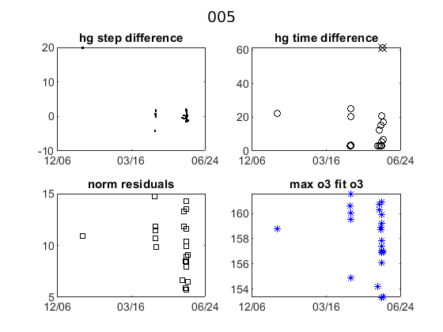
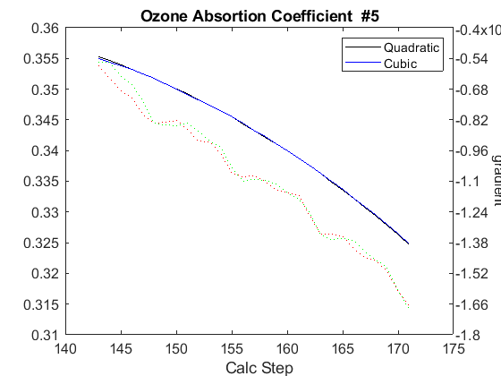

Contents
Brewer Evaluation
clear all;
file_setup='arenos2019_setup';
eval(file_setup);
Cal.n_inst=find(Cal.brw==005);
Cal.file_latex=fullfile('.','latex',Cal.brw_str{Cal.n_inst});
Cal.dir_figs=fullfile('latex',filesep(),Cal.brw_str{Cal.n_inst},...
filesep(),[Cal.brw_str{Cal.n_inst},'_figures'],filesep());
mkdir(Cal.dir_figs);
try
save(Cal.file_save,'-Append','Cal');
catch exception
fprintf('Error: %s\n Initializing data for Brewer %s\n',exception.message,Cal.brw_name{Cal.n_inst});
save(Cal.file_save);
end
ans =
logical
1
ans =
1×1 cell array
{'IZO#185'}
ans =
20×9 cell array
Columns 1 through 5
{'TSK#005'} {[ 5]} {[2]} {[0]} {'005'}
{'IOS#017'} {[ 17]} {[2]} {[0]} {'017'}
{'SCO#033'} {[ 33]} {[2]} {[0]} {'033'}
{'MAD#070'} {[ 70]} {[4]} {[0]} {'070'}
{'UK_#075'} {[ 75]} {[4]} {[0]} {'075'}
{'MUR#117'} {[117]} {[4]} {[0]} {'117'}
{'UK_#126'} {[126]} {[4]} {[0]} {'126'}
{'ARE#150'} {[150]} {[3]} {[0]} {'150'}
{'COR#151'} {[151]} {[4]} {[0]} {'151'}
{'K&Z#158'} {[158]} {[3]} {[0]} {'158'}
{'WRC#163'} {[163]} {[3]} {[0]} {'163'}
{'ZAR#166'} {[166]} {[4]} {[0]} {'166'}
{'UK_#172'} {[172]} {[3]} {[0]} {'172'}
{'JAP#174'} {[174]} {[3]} {[0]} {'174'}
{'IZO#185'} {[185]} {[3]} {[0]} {'185'}
{'MAD#186'} {[186]} {[3]} {[0]} {'186'}
{'CAN#190'} {[190]} {[3]} {[0]} {'190'}
{'TAM#201'} {[201]} {[3]} {[0]} {'201'}
{'DNK#202'} {[202]} {[3]} {[0]} {'202'}
{'DNK#228'} {[228]} {[3]} {[0]} {'228'}
Columns 6 through 9
{'..\005\ICF15117…'} {'..\005\ICF15117…'} {'1838'} {'1838'}
{'..\017\ICF14919…'} {'..\017\ICF14919…'} {'1680'} {'1680'}
{'..\033\ICF15617…'} {'..\033\IOS15617…'} {'2325'} {'2325'}
{'..\070\ICF15617…'} {'..\070\IOS15617…'} {'1685'} {'1685'}
{'..\075\ICF15017…'} {'..\075\ICF15017…'} {'1714'} {'1714'}
{'..\117\ICF15517…'} {'..\117\IOS15517…'} {'1620'} {'1620'}
{'..\126\icf15517…'} {'..\126\ICF17419…'} {'1710'} {'1710'}
{'..\150\ICF15617…'} {'..\150\ICF15617…'} {'0322'} {'0322'}
{'..\151\ICF15317…'} {'..\151\IOS15317…'} {'1880'} {'1880'}
{'..\158\ICF21218…'} {'..\158\ICF21218…'} {'0558'} {'0558'}
{'..\163\ICF23318…'} {'..\163\ICF23318…'} {'0274'} {'0274'}
{'..\166\ICF15217…'} {'..\166\ICF17419…'} {'1955'} {'1955'}
{'..\172\ICF15117…'} {'..\172\ICF15117…'} {'0444'} {'0444'}
{'..\174\ICF20718…'} {'..\174\ICF20718…'} {'0605'} {'0605'}
{'..\185\config18…'} {'..\185\ICF09819…'} {'0365'} {'0367'}
{'..\186\ICF15317…'} {'..\186\IOS15317…'} {'0315'} {'0315'}
{'..\190\ICF11419…'} {'..\190\ICF11419…'} {'0410'} {'0410'}
{'..\201\ICF14315…'} {'..\201\ICF14315…'} {'0320'} {'0320'}
{'..\202\ICF15017…'} {'..\202\ICF15017…'} {'0270'} {'0270'}
{'..\228\ICF15017…'} {'..\228\ICF17319…'} {'0242'} {'0242'}
Warning: Directory already exists.
configuration files
close all
[config_def,TCdef,DTdef,ETCdef,A1def,ATdef]=read_icf(Cal.brw_config_files{Cal.n_inst,2});
[config_orig,TCorig,DTorig,ETCorig,A1orig,ATorig]=read_icf(Cal.brw_config_files{Cal.n_inst,1});
Station.OSC=680;
Station.name='';
Station.lat=67;
Station.long=50;
Station.meanozo=350;
cal_step={}; sc_avg={}; sc_raw={}; Args={};
Sun_scan: Before Campaign
close all
[cal_step{1},sc_avg{1},sc_raw{1},Args{1}]=sc_report(Cal.brw_str{Cal.n_inst},Cal.brw_config_files{Cal.n_inst,1},...
'date_range',datenum(Cal.Date.cal_year,1,[1,159]),...
'CSN_orig',config_orig(14),'OSC',Station.OSC,...
'control_flag',0,'residual_limit',35,...
'hg_time',45,'one_flag',0);
005
c3 =
3×1 cell array
{'co' }
{'22:34:36' }
{'dh:_day_header'}
warning Date error in file
ans =
-1 12 30 0 0 0
OK->B00819.005
c3 =
3×1 cell array
{'co' }
{'22:28:15' }
{'dh:_day_header'}
warning Date error in file
ans =
-1 12 30 0 0 0
OK->B10619.005
c3 =
3×1 cell array
{'co' }
{'22:28:00' }
{'dh:_day_header'}
warning Date error in file
ans =
-1 12 30 0 0 0
OK->B10719.005
c3 =
3×1 cell array
{'co' }
{'22:27:33' }
{'dh:_day_header'}
warning Date error in file
ans =
-1 12 30 0 0 0
OK->B10919.005
c3 =
3×1 cell array
{'co' }
{'22:24:56' }
{'dh:_day_header'}
warning Date error in file
ans =
-1 12 30 0 0 0
OK->B14319.005
c3 =
3×1 cell array
{'co' }
{'22:25:07' }
{'dh:_day_header'}
warning Date error in file
ans =
-1 12 30 0 0 0
OK->B14519.005
c3 =
3×1 cell array
{'co' }
{'22:26:06' }
{'dh:_day_header'}
warning Date error in file
ans =
-1 12 30 0 0 0
OK->B14819.005
c3 =
3×1 cell array
{'co' }
{'22:25:34' }
{'dh:_day_header'}
warning Date error in file
ans =
-1 12 30 0 0 0
OK->B14919.005
c3 =
3×1 cell array
{'co' }
{'22:25:42' }
{'dh:_day_header'}
warning Date error in file
ans =
-1 12 30 0 0 0
OK->B15019.005
c3 =
3×1 cell array
{'co' }
{'22:25:50' }
{'dh:_day_header'}
warning Date error in file
ans =
-1 12 30 0 0 0
OK->B15119.005
Warning no depuerd SC

Sun_scan: Campaign
[cal_step{2},sc_avg{2},sc_raw{2},Args{2}]=sc_report(Cal.brw_str{Cal.n_inst},Cal.brw_config_files{Cal.n_inst,2},...
'date_range',datenum(Cal.Date.cal_year,1,Cal.calibration_days{Cal.n_inst,1}([1 end])),...
'CSN_orig',config_def(14),'OSC',Station.OSC,...
'control_flag',1,'residual_limit',35,...
'hg_time',35,'one_flag',1);
005
c3 =
3×1 cell array
{'co' }
{'07:48:57' }
{'dh:_day_header'}
OK->B16819.005
c3 =
3×1 cell array
{'co' }
{'00:28:24' }
{'dh:_day_header'}
OK->B17119.005
c3 =
3×1 cell array
{'co' }
{'00:28:38' }
{'dh:_day_header'}
OK->B17219.005
c3 =
3×1 cell array
{'co' }
{'00:28:50' }
{'dh:_day_header'}


ix=sort(findobj('tag','SC_INDIVIDUAL')); figure(ix); set(get(gca,'title'),'FontSize',8);
printfiles_report(ix',Cal.dir_figs,'aux_pattern',ix,'FontSize',.9,'Width',8.5,'Height',7);
ix=sort(findobj('tag','Final_SC_Calculation'));
if length(ix)>1
Width=8; Height=6;
for i=1:length(ix), figure(ix(i)); set(get(gca,'title'),'FontSize',8); end
else
Width=13; Height=8;
end
printfiles_report(ix',Cal.dir_figs,'aux_pattern',ix,'Width',Width,'Height',Height);
close all
naux =
1
naux =
1
figura =
'005_figures_Final_SC_Calculation_1'
naux =
2
Definicion de variables: SC
if length(cal_step)>1
d_p=[length(cal_step)-1 length(cal_step)]; tags={'','new'};
else
d_p=1; tags={'new'};
end
idx=1; cal_step_error={};
for t=d_p
cal_step_error{t}=round(mean([abs(cal_step{t}(2)-cal_step{t}(3)),abs(cal_step{t}(2)-cal_step{t}(4))]));
latexcmd(fullfile(Cal.file_latex,['cal_wavelengthSC',tags{idx},'_',Cal.brw_str{Cal.n_inst}]),...
['\numSC',tags{idx}],size(sc_avg{t},1),...
['\CALCSTEP',tags{idx}],round(cal_step{t}(1)),...
['\calsteperror',tags{idx}],cal_step_error{t});
idx=idx+1;
end
load(Cal.file_save,'sunscan');sunscan{Cal.n_inst}.cal_step=cal_step;
sunscan{Cal.n_inst}.cal_step_error=cal_step_error;
sunscan{Cal.n_inst}.sc_avg=sc_avg; sunscan{Cal.n_inst}.sc_raw=sc_raw;
sunscan{Cal.n_inst}.info=Args;
save(Cal.file_save,'-APPEND','sunscan');
dsp calibration
res={}; detail={}; DSP_QUAD={}; QUAD_SUM={}; QUAD_DETAIL={};
CUBIC_SUM={}; CUBIC_DETAIL={}; salida={}; CSN_icf={};
l=dir(fullfile('DSP',[Cal.brw_str{Cal.n_inst},'*']));
ldsp=cellstr(cat(1,l.name));
ldsp=ldsp(end-3:end)
for jj=1:length(ldsp)
if jj==length(ldsp),confign=2; else confign=1; end
try
[res{jj},detail{jj},DSP_QUAD{jj},QUAD_SUM{jj},QUAD_DETAIL{jj},...
CUBIC_SUM{jj},CUBIC_DETAIL{jj},salida{jj},CSN_icf{jj},...
]=dspreport(Cal,'dsp_dir',fullfile('DSP',ldsp{jj}),'config_n',1);
catch
warning(sprintf('Error en %s. DSP: %s',Cal.brw_name{Cal.n_inst},ldsp{jj}));
res{jj}=NaN*ones(15,9,2); detail{jj}=NaN*ones(7,6,15,2); QUAD_DETAIL{jj}=NaN;
end
datefile =
736114
now:W1015015.005
now:W3015015.005
now:W4015015.005
Warning: DSP: Not enough or too many points on either side of the
maximum of the line
now:W7015015.005
now:W8015015.005
Warning: DSP: Not enough or too many points on either side of the
maximum of the line
now:W15015015.005
now:W1115015.005
now:W3115015.005
now:W4115015.005
now:W5115015.005
now:W7115015.005
now:W8115015.005
now:W9115015.005
now:W1215015.005
now:W3215015.005
now:W4215015.005
now:W5215015.005
now:W7215015.005
now:W8215015.005
now:W9215015.005
now:W3315015.005
now:W4315015.005
now:W5315015.005
now:W7315015.005
now:W8315015.005
now:W9315015.005
now:W3415015.005
now:W4415015.005
now:W5415015.005
now:W7415015.005
now:W8415015.005
now:W9415015.005
now:W3515015.005
now:W4515015.005
now:W5515015.005
now:W7515015.005
now:W8515015.005
now:W9515015.005
lines_dsp_14915__005
saving alldsp to DSP/005_15_150/alldsp_14915_005.005
eliminamos la linea slit 2 2967.280000 -0.255083
eliminamos la linea slit 1 2893.600000 14.708791
eliminamos la linea slit 6 3080.822000 0.132830
eliminamos la linea slit 3 2967.280000 -0.195247
saving normaldsp to DSP/005_15_150/dspnorm_14915_005.005 as brewer compatible file
Use polyval(pwl(2,:),wl) for calculating normal wavelengths
Saving ozonecoeffs to DSP/005_15_150/opos14915_005.005
154 WL(A) 3015.76 3062.52 3100.08 3134.64 3167.87 3199.77
Res(A) 7.63 11.07 10.82 11.26 10.54 10.23
O3abs(1/cm) 3.2821 1.7903 1.0067 0.6773 0.3745 0.2965 O3: 0.3482
Daumt O3abs(1/cm) 3.2854 1.7843 0.9985 0.6709 0.3674 0.2968 O3: 0.3592
So2abs(1/cm) 4.2707 5.4815 2.3636 1.9590 1.0531 0.6206
Bremen O3abs(1/cm) 3.2940 1.7878 1.0041 0.6805 0.3727 0.2980 O3: 0.3504
Nicolet 1e4*Rayabs(1/cm) 5169.1 4835.6 4587.4 4373.3 4179.3 4003.3 R: 11.9059
Bates(fix) 1e4*Rayabs(1/cm) 0.0 4870.0 4620.0 4410.0 4220.0 4040.0 R: -1.0000
Bodhaine 1e4*Rayabs(1/cm) 5164.7 4833.6 4586.9 4373.9 4180.9 4005.6 R: 11.5275
I0(mW m^-2nm^-1) 15326.49 9422.39 7342.97 4916.01 4022.76 3208.95 ETC: 1490
Ozone offset due to Rayleigh (RayCOeff/O3Coeff): -3.4 DU
Ozone offset due to Rayleigh (Bodhaine): -3.6 DU
Ratio Ozone for So2(A3)= 1.1663, So2/O3(A2)= 2.6103
O3 factor from Bass & Paur to Daumont = 0.9695
O3 factor from Bass & Paur to Bremen = 0.9937
155 WL(A) 3015.83 3062.58 3100.15 3134.71 3167.93 3199.83
Res(A) 7.63 11.07 10.82 11.26 10.54 10.23
O3abs(1/cm) 3.2801 1.7889 1.0064 0.6771 0.3746 0.2962 O3: 0.3472
Daumt O3abs(1/cm) 3.2834 1.7831 0.9981 0.6708 0.3675 0.2965 O3: 0.3583
So2abs(1/cm) 4.3159 5.5066 2.3700 1.9484 1.0543 0.6185
Bremen O3abs(1/cm) 3.2918 1.7865 1.0037 0.6804 0.3727 0.2976 O3: 0.3495
Nicolet 1e4*Rayabs(1/cm) 5168.6 4835.1 4587.0 4372.9 4178.9 4002.9 R: 11.9033
Bates(fix) 1e4*Rayabs(1/cm) 0.0 4870.0 4620.0 4410.0 4220.0 4040.0 R: -1.0000
Bodhaine 1e4*Rayabs(1/cm) 5164.2 4833.1 4586.5 4373.5 4180.5 4005.2 R: 11.5174
I0(mW m^-2nm^-1) 15326.49 9416.37 7319.14 4912.43 4012.66 3202.98 ETC: 1480
Ozone offset due to Rayleigh (RayCOeff/O3Coeff): -3.4 DU
Ozone offset due to Rayleigh (Bodhaine): -3.6 DU
Ratio Ozone for So2(A3)= 1.1634, So2/O3(A2)= 2.6284
O3 factor from Bass & Paur to Daumont = 0.9691
O3 factor from Bass & Paur to Bremen = 0.9935
156 WL(A) 3015.90 3062.65 3100.22 3134.78 3168.00 3199.90
Res(A) 7.64 11.07 10.82 11.26 10.54 10.23
O3abs(1/cm) 3.2784 1.7875 1.0061 0.6769 0.3747 0.2957 O3: 0.3461
Daumt O3abs(1/cm) 3.2815 1.7818 0.9978 0.6708 0.3675 0.2962 O3: 0.3574
So2abs(1/cm) 4.3605 5.5303 2.3767 1.9378 1.0555 0.6165
Bremen O3abs(1/cm) 3.2898 1.7851 1.0034 0.6803 0.3728 0.2973 O3: 0.3485
Nicolet 1e4*Rayabs(1/cm) 5168.0 4834.7 4586.5 4372.4 4178.6 4002.6 R: 11.9008
Bates(fix) 1e4*Rayabs(1/cm) 0.0 4870.0 4620.0 4410.0 4220.0 4040.0 R: -1.0000
Bodhaine 1e4*Rayabs(1/cm) 5163.7 4832.7 4586.1 4373.1 4180.1 4004.9 R: 11.5171
I0(mW m^-2nm^-1) 15326.49 9410.35 7295.44 4908.85 4002.58 3195.79 ETC: 1468
Ozone offset due to Rayleigh (RayCOeff/O3Coeff): -3.4 DU
Ozone offset due to Rayleigh (Bodhaine): -3.6 DU
Ratio Ozone for So2(A3)= 1.1604, So2/O3(A2)= 2.6457
O3 factor from Bass & Paur to Daumont = 0.9686
O3 factor from Bass & Paur to Bremen = 0.9931
157 WL(A) 3015.96 3062.72 3100.28 3134.85 3168.07 3199.96
Res(A) 7.64 11.07 10.82 11.26 10.54 10.23
O3abs(1/cm) 3.2768 1.7861 1.0058 0.6767 0.3747 0.2953 O3: 0.3450
Daumt O3abs(1/cm) 3.2797 1.7805 0.9975 0.6706 0.3676 0.2959 O3: 0.3564
So2abs(1/cm) 4.4051 5.5541 2.3838 1.9267 1.0567 0.6143
Bremen O3abs(1/cm) 3.2877 1.7838 1.0031 0.6801 0.3729 0.2970 O3: 0.3475
Nicolet 1e4*Rayabs(1/cm) 5167.5 4834.2 4586.1 4372.0 4178.2 4002.2 R: 11.8982
Bates(fix) 1e4*Rayabs(1/cm) 0.0 4870.0 4620.0 4410.0 4220.0 4040.0 R: -1.0000
Bodhaine 1e4*Rayabs(1/cm) 5163.2 4832.2 4585.6 4372.7 4179.7 4004.5 R: 11.5200
I0(mW m^-2nm^-1) 15326.49 9404.34 7271.87 4905.27 3992.53 3185.09 ETC: 1450
Ozone offset due to Rayleigh (RayCOeff/O3Coeff): -3.4 DU
Ozone offset due to Rayleigh (Bodhaine): -3.6 DU
Ratio Ozone for So2(A3)= 1.1571, So2/O3(A2)= 2.6633
O3 factor from Bass & Paur to Daumont = 0.9679
O3 factor from Bass & Paur to Bremen = 0.9926
158 WL(A) 3016.03 3062.79 3100.35 3134.91 3168.13 3200.03
Res(A) 7.64 11.07 10.82 11.26 10.54 10.23
O3abs(1/cm) 3.2752 1.7847 1.0055 0.6764 0.3748 0.2948 O3: 0.3438
Daumt O3abs(1/cm) 3.2778 1.7793 0.9971 0.6705 0.3677 0.2955 O3: 0.3554
So2abs(1/cm) 4.4536 5.5779 2.3909 1.9156 1.0579 0.6121
Bremen O3abs(1/cm) 3.2857 1.7824 1.0027 0.6799 0.3730 0.2966 O3: 0.3465
Nicolet 1e4*Rayabs(1/cm) 5167.0 4833.7 4585.7 4371.6 4177.8 4001.9 R: 11.8957
Bates(fix) 1e4*Rayabs(1/cm) 0.0 4870.0 4620.0 4410.0 4220.0 4040.0 R: -1.0000
Bodhaine 1e4*Rayabs(1/cm) 5162.7 4831.7 4585.2 4372.3 4179.4 4004.2 R: 11.5100
I0(mW m^-2nm^-1) 15326.49 9398.34 7248.42 4901.70 3982.49 3174.42 ETC: 1433
Ozone offset due to Rayleigh (RayCOeff/O3Coeff): -3.5 DU
Ozone offset due to Rayleigh (Bodhaine): -3.6 DU
Ratio Ozone for So2(A3)= 1.1539, So2/O3(A2)= 2.6811
O3 factor from Bass & Paur to Daumont = 0.9675
O3 factor from Bass & Paur to Bremen = 0.9924
159 WL(A) 3016.10 3062.86 3100.42 3134.98 3168.20 3200.10
Res(A) 7.64 11.07 10.82 11.26 10.54 10.23
O3abs(1/cm) 3.2736 1.7833 1.0052 0.6760 0.3749 0.2943 O3: 0.3427
Daumt O3abs(1/cm) 3.2760 1.7779 0.9968 0.6703 0.3678 0.2952 O3: 0.3543
So2abs(1/cm) 4.5034 5.6010 2.3981 1.9048 1.0591 0.6100
Bremen O3abs(1/cm) 3.2836 1.7810 1.0024 0.6797 0.3731 0.2962 O3: 0.3454
Nicolet 1e4*Rayabs(1/cm) 5166.5 4833.3 4585.2 4371.2 4177.4 4001.5 R: 11.8932
Bates(fix) 1e4*Rayabs(1/cm) 0.0 4870.0 4620.0 4410.0 4220.0 4040.0 R: -1.0000
Bodhaine 1e4*Rayabs(1/cm) 5162.2 4831.3 4584.8 4371.9 4179.0 4003.8 R: 11.5104
I0(mW m^-2nm^-1) 15326.49 9392.35 7226.19 4898.12 3972.48 3163.77 ETC: 1416
Ozone offset due to Rayleigh (RayCOeff/O3Coeff): -3.5 DU
Ozone offset due to Rayleigh (Bodhaine): -3.7 DU
Ratio Ozone for So2(A3)= 1.1505, So2/O3(A2)= 2.6985
O3 factor from Bass & Paur to Daumont = 0.9672
O3 factor from Bass & Paur to Bremen = 0.9922
160 WL(A) 3016.17 3062.93 3100.49 3135.05 3168.26 3200.16
Res(A) 7.64 11.07 10.82 11.26 10.54 10.23
O3abs(1/cm) 3.2720 1.7819 1.0050 0.6757 0.3750 0.2938 O3: 0.3416
Daumt O3abs(1/cm) 3.2743 1.7766 0.9965 0.6701 0.3679 0.2948 O3: 0.3533
So2abs(1/cm) 4.5529 5.6218 2.4053 1.8940 1.0602 0.6077
Bremen O3abs(1/cm) 3.2816 1.7796 1.0021 0.6795 0.3732 0.2958 O3: 0.3443
Nicolet 1e4*Rayabs(1/cm) 5166.0 4832.8 4584.8 4370.8 4177.0 4001.2 R: 11.8906
Bates(fix) 1e4*Rayabs(1/cm) 0.0 4870.0 4620.0 4410.0 4220.0 4040.0 R: -1.0000
Bodhaine 1e4*Rayabs(1/cm) 5161.7 4830.8 4584.3 4371.5 4178.6 4003.5 R: 11.5123
I0(mW m^-2nm^-1) 15326.49 9386.36 7211.91 4894.55 3962.50 3157.82 ETC: 1415
Ozone offset due to Rayleigh (RayCOeff/O3Coeff): -3.5 DU
Ozone offset due to Rayleigh (Bodhaine): -3.7 DU
Ratio Ozone for So2(A3)= 1.1472, So2/O3(A2)= 2.7141
O3 factor from Bass & Paur to Daumont = 0.9671
O3 factor from Bass & Paur to Bremen = 0.9923
161 WL(A) 3016.24 3063.00 3100.56 3135.11 3168.33 3200.23
Res(A) 7.65 11.07 10.82 11.26 10.54 10.23
O3abs(1/cm) 3.2702 1.7804 1.0047 0.6753 0.3751 0.2933 O3: 0.3404
Daumt O3abs(1/cm) 3.2725 1.7753 0.9962 0.6699 0.3680 0.2944 O3: 0.3521
So2abs(1/cm) 4.6019 5.6426 2.4131 1.8830 1.0614 0.6055
Bremen O3abs(1/cm) 3.2796 1.7781 1.0018 0.6792 0.3733 0.2954 O3: 0.3431
Nicolet 1e4*Rayabs(1/cm) 5165.5 4832.3 4584.4 4370.4 4176.7 4000.8 R: 11.8881
Bates(fix) 1e4*Rayabs(1/cm) 0.0 4870.0 4620.0 4410.0 4220.0 4040.0 R: -1.0000
Bodhaine 1e4*Rayabs(1/cm) 5161.2 4830.3 4583.9 4371.1 4178.2 4003.1 R: 11.5025
I0(mW m^-2nm^-1) 15317.70 9380.39 7198.01 4890.99 3952.53 3153.97 ETC: 1419
Ozone offset due to Rayleigh (RayCOeff/O3Coeff): -3.5 DU
Ozone offset due to Rayleigh (Bodhaine): -3.7 DU
Ratio Ozone for So2(A3)= 1.1435, So2/O3(A2)= 2.7306
O3 factor from Bass & Paur to Daumont = 0.9668
O3 factor from Bass & Paur to Bremen = 0.9921
162 WL(A) 3016.31 3063.07 3100.62 3135.18 3168.40 3200.29
Res(A) 7.65 11.07 10.82 11.26 10.54 10.23
O3abs(1/cm) 3.2684 1.7788 1.0045 0.6750 0.3752 0.2928 O3: 0.3392
Daumt O3abs(1/cm) 3.2707 1.7739 0.9959 0.6697 0.3681 0.2940 O3: 0.3510
So2abs(1/cm) 4.6534 5.6633 2.4209 1.8717 1.0625 0.6033
Bremen O3abs(1/cm) 3.2777 1.7767 1.0015 0.6789 0.3734 0.2950 O3: 0.3419
Nicolet 1e4*Rayabs(1/cm) 5165.0 4831.8 4583.9 4370.0 4176.3 4000.5 R: 11.8855
Bates(fix) 1e4*Rayabs(1/cm) 0.0 4870.0 4620.0 4410.0 4220.0 4040.0 R: -1.0000
Bodhaine 1e4*Rayabs(1/cm) 5160.7 4829.9 4583.5 4370.7 4177.9 4002.8 R: 11.5037
I0(mW m^-2nm^-1) 15308.06 9374.42 7184.49 4887.42 3942.59 3150.22 ETC: 1422
Ozone offset due to Rayleigh (RayCOeff/O3Coeff): -3.5 DU
Ozone offset due to Rayleigh (Bodhaine): -3.7 DU
Ratio Ozone for So2(A3)= 1.1398, So2/O3(A2)= 2.7473
O3 factor from Bass & Paur to Daumont = 0.9665
O3 factor from Bass & Paur to Bremen = 0.9919
163 WL(A) 3016.38 3063.14 3100.69 3135.25 3168.46 3200.36
Res(A) 7.65 11.07 10.82 11.26 10.54 10.23
O3abs(1/cm) 3.2667 1.7773 1.0042 0.6746 0.3754 0.2923 O3: 0.3379
Daumt O3abs(1/cm) 3.2690 1.7725 0.9955 0.6695 0.3682 0.2935 O3: 0.3498
So2abs(1/cm) 4.7074 5.6839 2.4289 1.8606 1.0636 0.6009
Bremen O3abs(1/cm) 3.2757 1.7752 1.0011 0.6787 0.3736 0.2945 O3: 0.3407
Nicolet 1e4*Rayabs(1/cm) 5164.4 4831.4 4583.5 4369.6 4175.9 4000.1 R: 11.8830
Bates(fix) 1e4*Rayabs(1/cm) 0.0 4870.0 4620.0 4410.0 4220.0 4040.0 R: -1.0000
Bodhaine 1e4*Rayabs(1/cm) 5160.2 4829.4 4583.0 4370.3 4177.5 4002.4 R: 11.5042
I0(mW m^-2nm^-1) 15298.46 9368.45 7171.32 4883.86 3932.68 3146.58 ETC: 1427
Ozone offset due to Rayleigh (RayCOeff/O3Coeff): -3.5 DU
Ozone offset due to Rayleigh (Bodhaine): -3.7 DU
Ratio Ozone for So2(A3)= 1.1361, So2/O3(A2)= 2.7636
O3 factor from Bass & Paur to Daumont = 0.9662
O3 factor from Bass & Paur to Bremen = 0.9918
164 WL(A) 3016.45 3063.21 3100.76 3135.32 3168.53 3200.42
Res(A) 7.65 11.07 10.82 11.26 10.54 10.23
O3abs(1/cm) 3.2652 1.7758 1.0039 0.6742 0.3755 0.2917 O3: 0.3366
Daumt O3abs(1/cm) 3.2673 1.7711 0.9952 0.6692 0.3684 0.2931 O3: 0.3485
So2abs(1/cm) 4.7615 5.7019 2.4368 1.8498 1.0647 0.5986
Bremen O3abs(1/cm) 3.2738 1.7737 1.0008 0.6783 0.3737 0.2941 O3: 0.3395
Nicolet 1e4*Rayabs(1/cm) 5163.9 4830.9 4583.1 4369.2 4175.5 3999.8 R: 11.8804
Bates(fix) 1e4*Rayabs(1/cm) 0.0 4870.0 4620.0 4410.0 4220.0 4040.0 R: -1.0000
Bodhaine 1e4*Rayabs(1/cm) 5159.6 4828.9 4582.6 4369.9 4177.1 4002.1 R: 11.4951
I0(mW m^-2nm^-1) 15288.90 9362.50 7155.80 4880.30 3922.78 3143.03 ETC: 1429
Ozone offset due to Rayleigh (RayCOeff/O3Coeff): -3.5 DU
Ozone offset due to Rayleigh (Bodhaine): -3.7 DU
Ratio Ozone for So2(A3)= 1.1322, So2/O3(A2)= 2.7783
O3 factor from Bass & Paur to Daumont = 0.9658
O3 factor from Bass & Paur to Bremen = 0.9916
saving powfiu7 to DSP/005_15_150/dsp_14915_005.005
freecoef =
4
freecoef =
9
freecoef =
9
freecoef =
9
freecoef =
9
freecoef =
9
freecoef =
9
freecoef =
9
freecoef =
9
freecoef =
9
saving data to file:DSP/005_15_150/dsp_14915_005.005
Too large slitpos deviation: Recalc with slit #1 shifted by 1.634
freecoef =
4
freecoef =
9
freecoef =
9
freecoef =
9
freecoef =
9
freecoef =
9
freecoef =
9
freecoef =
9
freecoef =
9
freecoef =
9
saving data to file:DSP/005_15_150/dsp_14915_005.005
Residuals using powfiu7 [RMS]:
Columns 1 through 6
11.347 12.298 12.274 12.263 12.258 12.255
Columns 7 through 10
12.254 12.253 12.253 12.252
Use brstps2 to calculate steps and wavelengths
Saving ozonecoeffs to DSP/005_15_150/opos_pow7_14915_005.005
154 WL(A) 3038.30 3060.37 3096.89 3132.46 3165.04 3195.70
Res(A) 7.83 11.24 10.98 11.42 10.71 10.41
O3abs(1/cm) 2.4653 1.8241 1.0329 0.6746 0.3836 0.2945 O3: 0.3523
Daumt O3abs(1/cm) 2.4652 1.8158 1.0327 0.6653 0.3788 0.2907 O3: 0.3609
So2abs(1/cm) 4.6962 4.4668 2.2640 2.2453 1.0128 0.6619
Bremen O3abs(1/cm) 2.4684 1.8215 1.0373 0.6763 0.3833 0.2928 O3: 0.3537
Nicolet 1e4*Rayabs(1/cm) 5004.7 4850.3 4607.9 4386.4 4195.4 4025.2 R: 27.6458
Bates(fix) 1e4*Rayabs(1/cm) 0.0 4870.0 4620.0 4410.0 4220.0 4040.0 R: -1.0000
Bodhaine 1e4*Rayabs(1/cm) 5001.6 4848.2 4607.3 4387.0 4196.9 4027.4 R: 27.1905
I0(mW m^-2nm^-1) 11265.62 9607.18 7769.29 5000.91 4496.67 3576.09 ETC: 1456
Ozone offset due to Rayleigh (RayCOeff/O3Coeff): -7.8 DU
Ozone offset due to Rayleigh (Bodhaine): -8.0 DU
Ratio Ozone for So2(A3)= 1.1554, So2/O3(A2)= 2.0175
O3 factor from Bass & Paur to Daumont = 0.9763
O3 factor from Bass & Paur to Bremen = 0.9960
155 WL(A) 3038.37 3060.44 3096.96 3132.53 3165.11 3195.77
Res(A) 7.83 11.24 10.98 11.42 10.71 10.41
O3abs(1/cm) 2.4644 1.8232 1.0317 0.6749 0.3831 0.2949 O3: 0.3527
Daumt O3abs(1/cm) 2.4643 1.8149 1.0314 0.6656 0.3782 0.2912 O3: 0.3614
So2abs(1/cm) 4.7459 4.5038 2.2617 2.2390 1.0131 0.6626
Bremen O3abs(1/cm) 2.4675 1.8205 1.0360 0.6766 0.3827 0.2932 O3: 0.3542
Nicolet 1e4*Rayabs(1/cm) 5004.2 4849.8 4607.4 4386.0 4195.0 4024.8 R: 27.6409
Bates(fix) 1e4*Rayabs(1/cm) 0.0 4870.0 4620.0 4410.0 4220.0 4040.0 R: -1.0000
Bodhaine 1e4*Rayabs(1/cm) 5001.1 4847.8 4606.8 4386.6 4196.5 4027.0 R: 27.1885
I0(mW m^-2nm^-1) 11262.14 9601.01 7762.73 4998.41 4476.91 3569.87 ETC: 1483
Ozone offset due to Rayleigh (RayCOeff/O3Coeff): -7.8 DU
Ozone offset due to Rayleigh (Bodhaine): -8.0 DU
Ratio Ozone for So2(A3)= 1.1576, So2/O3(A2)= 2.0467
O3 factor from Bass & Paur to Daumont = 0.9760
O3 factor from Bass & Paur to Bremen = 0.9958
156 WL(A) 3038.44 3060.51 3097.03 3132.60 3165.17 3195.84
Res(A) 7.83 11.24 10.98 11.42 10.71 10.41
O3abs(1/cm) 2.4635 1.8222 1.0307 0.6752 0.3826 0.2952 O3: 0.3532
Daumt O3abs(1/cm) 2.4634 1.8140 1.0301 0.6659 0.3777 0.2916 O3: 0.3618
So2abs(1/cm) 4.7978 4.5411 2.2596 2.2325 1.0134 0.6633
Bremen O3abs(1/cm) 2.4665 1.8196 1.0348 0.6769 0.3822 0.2936 O3: 0.3547
Nicolet 1e4*Rayabs(1/cm) 5003.7 4849.4 4607.0 4385.6 4194.6 4024.5 R: 27.6361
Bates(fix) 1e4*Rayabs(1/cm) 0.0 4870.0 4620.0 4410.0 4220.0 4040.0 R: -1.0000
Bodhaine 1e4*Rayabs(1/cm) 5000.6 4847.3 4606.4 4386.2 4196.1 4026.7 R: 27.1835
I0(mW m^-2nm^-1) 11258.66 9594.85 7756.17 4995.91 4457.23 3563.66 ETC: 1511
Ozone offset due to Rayleigh (RayCOeff/O3Coeff): -7.8 DU
Ozone offset due to Rayleigh (Bodhaine): -8.0 DU
Ratio Ozone for So2(A3)= 1.1598, So2/O3(A2)= 2.0758
O3 factor from Bass & Paur to Daumont = 0.9761
O3 factor from Bass & Paur to Bremen = 0.9958
157 WL(A) 3038.51 3060.58 3097.09 3132.67 3165.24 3195.90
Res(A) 7.83 11.24 10.98 11.42 10.71 10.41
O3abs(1/cm) 2.4627 1.8212 1.0297 0.6754 0.3821 0.2956 O3: 0.3538
Daumt O3abs(1/cm) 2.4625 1.8132 1.0288 0.6662 0.3772 0.2920 O3: 0.3623
So2abs(1/cm) 4.8485 4.5771 2.2578 2.2255 1.0136 0.6639
Bremen O3abs(1/cm) 2.4655 1.8187 1.0336 0.6771 0.3817 0.2940 O3: 0.3551
Nicolet 1e4*Rayabs(1/cm) 5003.2 4848.9 4606.5 4385.2 4194.2 4024.1 R: 27.6312
Bates(fix) 1e4*Rayabs(1/cm) 0.0 4870.0 4620.0 4410.0 4220.0 4040.0 R: -1.0000
Bodhaine 1e4*Rayabs(1/cm) 5000.1 4846.8 4605.9 4385.8 4195.7 4026.3 R: 27.1765
I0(mW m^-2nm^-1) 11255.19 9588.69 7749.62 4993.41 4437.65 3557.46 ETC: 1538
Ozone offset due to Rayleigh (RayCOeff/O3Coeff): -7.8 DU
Ozone offset due to Rayleigh (Bodhaine): -8.0 DU
Ratio Ozone for So2(A3)= 1.1620, So2/O3(A2)= 2.1035
O3 factor from Bass & Paur to Daumont = 0.9765
O3 factor from Bass & Paur to Bremen = 0.9962
158 WL(A) 3038.58 3060.65 3097.16 3132.73 3165.31 3195.97
Res(A) 7.83 11.24 10.98 11.42 10.71 10.41
O3abs(1/cm) 2.4618 1.8202 1.0287 0.6757 0.3816 0.2959 O3: 0.3543
Daumt O3abs(1/cm) 2.4616 1.8123 1.0276 0.6665 0.3767 0.2924 O3: 0.3627
So2abs(1/cm) 4.8988 4.6128 2.2564 2.2184 1.0141 0.6646
Bremen O3abs(1/cm) 2.4645 1.8178 1.0324 0.6774 0.3812 0.2944 O3: 0.3555
Nicolet 1e4*Rayabs(1/cm) 5002.7 4848.4 4606.1 4384.8 4193.8 4023.7 R: 27.6264
Bates(fix) 1e4*Rayabs(1/cm) 0.0 4870.0 4620.0 4410.0 4220.0 4040.0 R: -1.0000
Bodhaine 1e4*Rayabs(1/cm) 4999.6 4846.3 4605.5 4385.4 4195.3 4026.0 R: 27.1740
I0(mW m^-2nm^-1) 11251.72 9582.97 7743.08 4990.92 4418.16 3551.27 ETC: 1565
Ozone offset due to Rayleigh (RayCOeff/O3Coeff): -7.8 DU
Ozone offset due to Rayleigh (Bodhaine): -8.0 DU
Ratio Ozone for So2(A3)= 1.1643, So2/O3(A2)= 2.1304
O3 factor from Bass & Paur to Daumont = 0.9769
O3 factor from Bass & Paur to Bremen = 0.9966
159 WL(A) 3038.65 3060.72 3097.23 3132.80 3165.38 3196.04
Res(A) 7.83 11.24 10.98 11.42 10.71 10.41
O3abs(1/cm) 2.4608 1.8193 1.0277 0.6760 0.3812 0.2963 O3: 0.3548
Daumt O3abs(1/cm) 2.4607 1.8114 1.0264 0.6668 0.3762 0.2927 O3: 0.3631
So2abs(1/cm) 4.9496 4.6490 2.2549 2.2111 1.0145 0.6651
Bremen O3abs(1/cm) 2.4635 1.8168 1.0312 0.6776 0.3807 0.2948 O3: 0.3559
Nicolet 1e4*Rayabs(1/cm) 5002.2 4847.9 4605.6 4384.3 4193.5 4023.4 R: 27.6215
Bates(fix) 1e4*Rayabs(1/cm) 0.0 4870.0 4620.0 4410.0 4220.0 4040.0 R: -1.0000
Bodhaine 1e4*Rayabs(1/cm) 4999.1 4845.8 4605.0 4384.9 4195.0 4025.6 R: 27.1693
I0(mW m^-2nm^-1) 11248.25 9578.05 7736.55 4988.42 4401.87 3545.08 ETC: 1585
Ozone offset due to Rayleigh (RayCOeff/O3Coeff): -7.8 DU
Ozone offset due to Rayleigh (Bodhaine): -7.9 DU
Ratio Ozone for So2(A3)= 1.1664, So2/O3(A2)= 2.1575
O3 factor from Bass & Paur to Daumont = 0.9772
O3 factor from Bass & Paur to Bremen = 0.9968
160 WL(A) 3038.72 3060.79 3097.30 3132.87 3165.44 3196.10
Res(A) 7.83 11.24 10.98 11.42 10.71 10.41
O3abs(1/cm) 2.4596 1.8184 1.0268 0.6762 0.3808 0.2966 O3: 0.3553
Daumt O3abs(1/cm) 2.4597 1.8105 1.0252 0.6671 0.3757 0.2931 O3: 0.3635
So2abs(1/cm) 5.0025 4.6858 2.2536 2.2039 1.0150 0.6657
Bremen O3abs(1/cm) 2.4625 1.8158 1.0301 0.6779 0.3802 0.2951 O3: 0.3563
Nicolet 1e4*Rayabs(1/cm) 5001.7 4847.4 4605.2 4383.9 4193.1 4023.0 R: 27.6167
Bates(fix) 1e4*Rayabs(1/cm) 0.0 4870.0 4620.0 4410.0 4220.0 4040.0 R: -1.0000
Bodhaine 1e4*Rayabs(1/cm) 4998.6 4845.4 4604.6 4384.5 4194.6 4025.2 R: 27.1629
I0(mW m^-2nm^-1) 11244.79 9572.17 7730.04 4985.93 4392.02 3538.91 ETC: 1591
Ozone offset due to Rayleigh (RayCOeff/O3Coeff): -7.8 DU
Ozone offset due to Rayleigh (Bodhaine): -7.9 DU
Ratio Ozone for So2(A3)= 1.1683, So2/O3(A2)= 2.1850
O3 factor from Bass & Paur to Daumont = 0.9774
O3 factor from Bass & Paur to Bremen = 0.9970
161 WL(A) 3038.79 3060.86 3097.37 3132.94 3165.51 3196.17
Res(A) 7.83 11.24 10.98 11.42 10.71 10.41
O3abs(1/cm) 2.4585 1.8175 1.0259 0.6764 0.3804 0.2970 O3: 0.3557
Daumt O3abs(1/cm) 2.4587 1.8096 1.0241 0.6674 0.3752 0.2935 O3: 0.3638
So2abs(1/cm) 5.0541 4.7216 2.2527 2.1962 1.0156 0.6661
Bremen O3abs(1/cm) 2.4614 1.8149 1.0290 0.6781 0.3798 0.2955 O3: 0.3567
Nicolet 1e4*Rayabs(1/cm) 5001.2 4847.0 4604.8 4383.5 4192.7 4022.7 R: 27.6118
Bates(fix) 1e4*Rayabs(1/cm) 0.0 4870.0 4620.0 4410.0 4220.0 4040.0 R: -1.0000
Bodhaine 1e4*Rayabs(1/cm) 4998.1 4844.9 4604.2 4384.1 4194.2 4024.9 R: 27.1595
I0(mW m^-2nm^-1) 11241.32 9566.01 7723.53 4983.44 4382.43 3532.74 ETC: 1596
Ozone offset due to Rayleigh (RayCOeff/O3Coeff): -7.8 DU
Ozone offset due to Rayleigh (Bodhaine): -7.9 DU
Ratio Ozone for So2(A3)= 1.1703, So2/O3(A2)= 2.2112
O3 factor from Bass & Paur to Daumont = 0.9777
O3 factor from Bass & Paur to Bremen = 0.9973
162 WL(A) 3038.86 3060.93 3097.44 3133.01 3165.58 3196.24
Res(A) 7.83 11.24 10.98 11.42 10.71 10.41
O3abs(1/cm) 2.4574 1.8165 1.0249 0.6766 0.3799 0.2973 O3: 0.3561
Daumt O3abs(1/cm) 2.4577 1.8086 1.0230 0.6676 0.3747 0.2938 O3: 0.3642
So2abs(1/cm) 5.1052 4.7566 2.2520 2.1882 1.0161 0.6665
Bremen O3abs(1/cm) 2.4603 1.8139 1.0279 0.6783 0.3793 0.2958 O3: 0.3571
Nicolet 1e4*Rayabs(1/cm) 5000.7 4846.5 4604.3 4383.1 4192.3 4022.3 R: 27.6070
Bates(fix) 1e4*Rayabs(1/cm) 0.0 4870.0 4620.0 4410.0 4220.0 4040.0 R: -1.0000
Bodhaine 1e4*Rayabs(1/cm) 4997.6 4844.4 4603.7 4383.7 4193.8 4024.5 R: 27.1552
I0(mW m^-2nm^-1) 11237.87 9559.86 7717.03 4980.95 4373.10 3526.59 ETC: 1601
Ozone offset due to Rayleigh (RayCOeff/O3Coeff): -7.8 DU
Ozone offset due to Rayleigh (Bodhaine): -7.9 DU
Ratio Ozone for So2(A3)= 1.1720, So2/O3(A2)= 2.2370
O3 factor from Bass & Paur to Daumont = 0.9778
O3 factor from Bass & Paur to Bremen = 0.9974
163 WL(A) 3038.93 3061.00 3097.51 3133.08 3165.65 3196.30
Res(A) 7.83 11.24 10.98 11.42 10.71 10.41
O3abs(1/cm) 2.4563 1.8154 1.0240 0.6768 0.3795 0.2975 O3: 0.3565
Daumt O3abs(1/cm) 2.4567 1.8077 1.0219 0.6679 0.3743 0.2941 O3: 0.3645
So2abs(1/cm) 5.1565 4.7918 2.2515 2.1803 1.0168 0.6670
Bremen O3abs(1/cm) 2.4591 1.8129 1.0268 0.6785 0.3789 0.2961 O3: 0.3574
Nicolet 1e4*Rayabs(1/cm) 5000.2 4846.0 4603.9 4382.7 4191.9 4021.9 R: 27.6022
Bates(fix) 1e4*Rayabs(1/cm) 0.0 4870.0 4620.0 4410.0 4220.0 4040.0 R: -1.0000
Bodhaine 1e4*Rayabs(1/cm) 4997.1 4843.9 4603.3 4383.3 4193.4 4024.2 R: 27.1493
I0(mW m^-2nm^-1) 11235.26 9553.72 7710.54 4978.46 4364.01 3520.44 ETC: 1605
Ozone offset due to Rayleigh (RayCOeff/O3Coeff): -7.7 DU
Ozone offset due to Rayleigh (Bodhaine): -7.9 DU
Ratio Ozone for So2(A3)= 1.1735, So2/O3(A2)= 2.2630
O3 factor from Bass & Paur to Daumont = 0.9779
O3 factor from Bass & Paur to Bremen = 0.9975
164 WL(A) 3039.01 3061.07 3097.58 3133.14 3165.71 3196.37
Res(A) 7.83 11.24 10.98 11.43 10.71 10.41
O3abs(1/cm) 2.4553 1.8143 1.0233 0.6769 0.3791 0.2978 O3: 0.3569
Daumt O3abs(1/cm) 2.4556 1.8067 1.0208 0.6682 0.3738 0.2944 O3: 0.3649
So2abs(1/cm) 5.2094 4.8277 2.2509 2.1722 1.0175 0.6673
Bremen O3abs(1/cm) 2.4580 1.8118 1.0258 0.6788 0.3785 0.2964 O3: 0.3577
Nicolet 1e4*Rayabs(1/cm) 4999.7 4845.5 4603.4 4382.3 4191.5 4021.6 R: 27.5973
Bates(fix) 1e4*Rayabs(1/cm) 0.0 4870.0 4620.0 4410.0 4220.0 4040.0 R: -1.0000
Bodhaine 1e4*Rayabs(1/cm) 4996.6 4843.5 4602.8 4382.9 4193.0 4023.8 R: 27.1451
I0(mW m^-2nm^-1) 11235.26 9547.59 7704.06 4975.98 4354.64 3514.30 ETC: 1610
Ozone offset due to Rayleigh (RayCOeff/O3Coeff): -7.7 DU
Ozone offset due to Rayleigh (Bodhaine): -7.9 DU
Ratio Ozone for So2(A3)= 1.1749, So2/O3(A2)= 2.2892
O3 factor from Bass & Paur to Daumont = 0.9783
O3 factor from Bass & Paur to Bremen = 0.9979
Warning: The EraseMode property is no longer supported and will
error in a future release.
Warning: The EraseMode property is no longer supported and will
error in a future release.
Warning: The EraseMode property is no longer supported and will
error in a future release.
Warning: The EraseMode property is no longer supported and will
error in a future release.
Warning: The EraseMode property is no longer supported and will
error in a future release.
Warning: The EraseMode property is no longer supported and will
error in a future release.
Warning: The EraseMode property is no longer supported and will
error in a future release.
Warning: The EraseMode property is no longer supported and will
error in a future release.
Warning: The EraseMode property is no longer supported and will
error in a future release.
Warning: The EraseMode property is no longer supported and will
error in a future release.
Warning: The EraseMode property is no longer supported and will
error in a future release.

datefile =
736848
now:W1015317.005
now:W3015317.005
now:W7015317.005
now:W8015317.005
Warning: DSP: Not enough or too many points on either side of the
maximum of the line
now:W1115317.005
now:W3115317.005
now:W7115317.005
now:W8115317.005
now:W9115317.005
now:W1215317.005
now:W3215317.005
now:W7215317.005
now:W8215317.005
now:W9215317.005
now:W3315317.005
now:W7315317.005
now:W8315317.005
now:W9315317.005
now:W3415317.005
now:W7415317.005
now:W8415317.005
now:W9415317.005
now:W3515317.005
now:W7515317.005
now:W8515317.005
now:W9515317.005
lines_dsp_15217__005
saving alldsp to DSP/005_17_153/alldsp_15217_005.005
eliminamos la linea slit 3 2967.280000 -0.123754
saving normaldsp to DSP/005_17_153/dspnorm_15217_005.005 as brewer compatible file
Use polyval(pwl(2,:),wl) for calculating normal wavelengths
Saving ozonecoeffs to DSP/005_17_153/opos15217_005.005
154 WL(A) 3022.15 3062.60 3100.23 3134.82 3167.73 3199.90
Res(A) 7.86 10.52 10.75 10.98 10.86 10.50
O3abs(1/cm) 3.0899 1.7898 1.0060 0.6776 0.3747 0.2951 O3: 0.3444
Daumt O3abs(1/cm) 3.0957 1.7838 0.9977 0.6714 0.3679 0.2956 O3: 0.3552
So2abs(1/cm) 8.4434 5.5521 2.3765 1.9317 1.0503 0.6156
Bremen O3abs(1/cm) 3.0905 1.7872 1.0033 0.6809 0.3731 0.2967 O3: 0.3466
Nicolet 1e4*Rayabs(1/cm) 5121.7 4835.0 4586.5 4372.2 4180.1 4002.6 R: 8.6455
Bates(fix) 1e4*Rayabs(1/cm) 0.0 4870.0 4620.0 4410.0 4220.0 4040.0 R: -1.0000
Bodhaine 1e4*Rayabs(1/cm) 5117.8 4833.0 4586.0 4372.9 4181.6 4004.9 R: 8.2796
I0(mW m^-2nm^-1) 14312.24 9413.77 7294.30 4905.04 4045.03 3199.02 ETC: 1381
Ozone offset due to Rayleigh (RayCOeff/O3Coeff): -2.5 DU
Ozone offset due to Rayleigh (Bodhaine): -2.7 DU
Ratio Ozone for So2(A3)= 1.1601, So2/O3(A2)= 2.6815
O3 factor from Bass & Paur to Daumont = 0.9696
O3 factor from Bass & Paur to Bremen = 0.9937
155 WL(A) 3022.22 3062.67 3100.30 3134.89 3167.80 3199.96
Res(A) 7.86 10.52 10.75 10.98 10.86 10.50
O3abs(1/cm) 3.0866 1.7885 1.0057 0.6773 0.3748 0.2946 O3: 0.3434
Daumt O3abs(1/cm) 3.0926 1.7826 0.9974 0.6713 0.3679 0.2953 O3: 0.3544
So2abs(1/cm) 8.4375 5.5767 2.3837 1.9208 1.0515 0.6135
Bremen O3abs(1/cm) 3.0875 1.7859 1.0030 0.6807 0.3731 0.2964 O3: 0.3457
Nicolet 1e4*Rayabs(1/cm) 5121.2 4834.5 4586.0 4371.8 4179.7 4002.2 R: 8.6436
Bates(fix) 1e4*Rayabs(1/cm) 0.0 4870.0 4620.0 4410.0 4220.0 4040.0 R: -1.0000
Bodhaine 1e4*Rayabs(1/cm) 5117.3 4832.5 4585.5 4372.5 4181.3 4004.5 R: 8.2748
I0(mW m^-2nm^-1) 14272.87 9407.14 7270.22 4901.20 4035.38 3189.10 ETC: 1363
Ozone offset due to Rayleigh (RayCOeff/O3Coeff): -2.5 DU
Ozone offset due to Rayleigh (Bodhaine): -2.7 DU
Ratio Ozone for So2(A3)= 1.1572, So2/O3(A2)= 2.6994
O3 factor from Bass & Paur to Daumont = 0.9691
O3 factor from Bass & Paur to Bremen = 0.9933
156 WL(A) 3022.29 3062.74 3100.37 3134.95 3167.87 3200.03
Res(A) 7.86 10.52 10.75 10.98 10.86 10.50
O3abs(1/cm) 3.0833 1.7871 1.0054 0.6771 0.3748 0.2941 O3: 0.3424
Daumt O3abs(1/cm) 3.0895 1.7813 0.9971 0.6712 0.3679 0.2949 O3: 0.3535
So2abs(1/cm) 8.4283 5.6013 2.3910 1.9097 1.0527 0.6113
Bremen O3abs(1/cm) 3.0845 1.7845 1.0027 0.6805 0.3731 0.2960 O3: 0.3448
Nicolet 1e4*Rayabs(1/cm) 5120.7 4834.1 4585.6 4371.4 4179.3 4001.9 R: 8.6418
Bates(fix) 1e4*Rayabs(1/cm) 0.0 4870.0 4620.0 4410.0 4220.0 4040.0 R: -1.0000
Bodhaine 1e4*Rayabs(1/cm) 5116.7 4832.1 4585.1 4372.1 4180.9 4004.2 R: 8.2702
I0(mW m^-2nm^-1) 14233.85 9400.51 7246.28 4897.37 4025.76 3179.20 ETC: 1346
Ozone offset due to Rayleigh (RayCOeff/O3Coeff): -2.5 DU
Ozone offset due to Rayleigh (Bodhaine): -2.7 DU
Ratio Ozone for So2(A3)= 1.1542, So2/O3(A2)= 2.7173
O3 factor from Bass & Paur to Daumont = 0.9687
O3 factor from Bass & Paur to Bremen = 0.9930
157 WL(A) 3022.36 3062.81 3100.43 3135.02 3167.93 3200.09
Res(A) 7.86 10.52 10.75 10.97 10.85 10.50
O3abs(1/cm) 3.0800 1.7856 1.0052 0.6768 0.3748 0.2937 O3: 0.3414
Daumt O3abs(1/cm) 3.0863 1.7800 0.9968 0.6710 0.3679 0.2946 O3: 0.3525
So2abs(1/cm) 8.4185 5.6259 2.3982 1.8984 1.0538 0.6092
Bremen O3abs(1/cm) 3.0815 1.7831 1.0024 0.6803 0.3732 0.2956 O3: 0.3438
Nicolet 1e4*Rayabs(1/cm) 5120.2 4833.6 4585.2 4371.0 4178.9 4001.5 R: 8.6399
Bates(fix) 1e4*Rayabs(1/cm) 0.0 4870.0 4620.0 4410.0 4220.0 4040.0 R: -1.0000
Bodhaine 1e4*Rayabs(1/cm) 5116.2 4831.6 4584.7 4371.7 4180.5 4003.8 R: 8.2740
I0(mW m^-2nm^-1) 14195.16 9393.90 7230.19 4893.55 4016.15 3169.32 ETC: 1336
Ozone offset due to Rayleigh (RayCOeff/O3Coeff): -2.5 DU
Ozone offset due to Rayleigh (Bodhaine): -2.7 DU
Ratio Ozone for So2(A3)= 1.1511, So2/O3(A2)= 2.7358
O3 factor from Bass & Paur to Daumont = 0.9684
O3 factor from Bass & Paur to Bremen = 0.9930
158 WL(A) 3022.43 3062.88 3100.50 3135.09 3168.00 3200.16
Res(A) 7.86 10.52 10.75 10.97 10.85 10.50
O3abs(1/cm) 3.0767 1.7842 1.0050 0.6764 0.3749 0.2932 O3: 0.3404
Daumt O3abs(1/cm) 3.0831 1.7787 0.9965 0.6708 0.3680 0.2942 O3: 0.3516
So2abs(1/cm) 8.4084 5.6496 2.4055 1.8871 1.0550 0.6070
Bremen O3abs(1/cm) 3.0784 1.7817 1.0021 0.6801 0.3732 0.2952 O3: 0.3428
Nicolet 1e4*Rayabs(1/cm) 5119.7 4833.1 4584.7 4370.6 4178.6 4001.2 R: 8.6381
Bates(fix) 1e4*Rayabs(1/cm) 0.0 4870.0 4620.0 4410.0 4220.0 4040.0 R: -1.0000
Bodhaine 1e4*Rayabs(1/cm) 5115.7 4831.1 4584.2 4371.3 4180.1 4003.5 R: 8.2698
I0(mW m^-2nm^-1) 14156.82 9387.29 7215.67 4889.72 4006.56 3159.47 ETC: 1327
Ozone offset due to Rayleigh (RayCOeff/O3Coeff): -2.5 DU
Ozone offset due to Rayleigh (Bodhaine): -2.7 DU
Ratio Ozone for So2(A3)= 1.1478, So2/O3(A2)= 2.7537
O3 factor from Bass & Paur to Daumont = 0.9683
O3 factor from Bass & Paur to Bremen = 0.9930
159 WL(A) 3022.50 3062.95 3100.57 3135.16 3168.07 3200.23
Res(A) 7.86 10.52 10.75 10.97 10.85 10.50
O3abs(1/cm) 3.0737 1.7827 1.0047 0.6760 0.3750 0.2927 O3: 0.3394
Daumt O3abs(1/cm) 3.0799 1.7774 0.9961 0.6706 0.3680 0.2938 O3: 0.3506
So2abs(1/cm) 8.3963 5.6713 2.4132 1.8762 1.0562 0.6047
Bremen O3abs(1/cm) 3.0753 1.7803 1.0017 0.6798 0.3733 0.2948 O3: 0.3418
Nicolet 1e4*Rayabs(1/cm) 5119.2 4832.6 4584.3 4370.2 4178.2 4000.8 R: 8.6362
Bates(fix) 1e4*Rayabs(1/cm) 0.0 4870.0 4620.0 4410.0 4220.0 4040.0 R: -1.0000
Bodhaine 1e4*Rayabs(1/cm) 5115.2 4830.7 4583.8 4370.9 4179.7 4003.1 R: 8.2646
I0(mW m^-2nm^-1) 14118.80 9380.70 7201.56 4885.90 3996.99 3149.64 ETC: 1320
Ozone offset due to Rayleigh (RayCOeff/O3Coeff): -2.5 DU
Ozone offset due to Rayleigh (Bodhaine): -2.7 DU
Ratio Ozone for So2(A3)= 1.1445, So2/O3(A2)= 2.7701
O3 factor from Bass & Paur to Daumont = 0.9681
O3 factor from Bass & Paur to Bremen = 0.9929
160 WL(A) 3022.57 3063.02 3100.64 3135.22 3168.13 3200.29
Res(A) 7.86 10.52 10.75 10.97 10.85 10.50
O3abs(1/cm) 3.0706 1.7812 1.0045 0.6756 0.3750 0.2922 O3: 0.3383
Daumt O3abs(1/cm) 3.0767 1.7761 0.9958 0.6704 0.3681 0.2933 O3: 0.3495
So2abs(1/cm) 8.3809 5.6927 2.4211 1.8651 1.0573 0.6024
Bremen O3abs(1/cm) 3.0722 1.7789 1.0014 0.6796 0.3733 0.2944 O3: 0.3407
Nicolet 1e4*Rayabs(1/cm) 5118.7 4832.2 4583.8 4369.8 4177.8 4000.5 R: 8.6344
Bates(fix) 1e4*Rayabs(1/cm) 0.0 4870.0 4620.0 4410.0 4220.0 4040.0 R: -1.0000
Bodhaine 1e4*Rayabs(1/cm) 5114.7 4830.2 4583.4 4370.4 4179.4 4002.8 R: 8.2685
I0(mW m^-2nm^-1) 14081.10 9374.12 7187.82 4882.08 3987.44 3143.62 ETC: 1319
Ozone offset due to Rayleigh (RayCOeff/O3Coeff): -2.6 DU
Ozone offset due to Rayleigh (Bodhaine): -2.7 DU
Ratio Ozone for So2(A3)= 1.1410, So2/O3(A2)= 2.7867
O3 factor from Bass & Paur to Daumont = 0.9677
O3 factor from Bass & Paur to Bremen = 0.9927
161 WL(A) 3022.64 3063.09 3100.71 3135.29 3168.20 3200.36
Res(A) 7.86 10.52 10.75 10.97 10.85 10.50
O3abs(1/cm) 3.0672 1.7798 1.0042 0.6752 0.3751 0.2916 O3: 0.3370
Daumt O3abs(1/cm) 3.0734 1.7747 0.9955 0.6701 0.3681 0.2929 O3: 0.3484
So2abs(1/cm) 8.3645 5.7141 2.4292 1.8538 1.0585 0.6001
Bremen O3abs(1/cm) 3.0690 1.7774 1.0011 0.6793 0.3734 0.2939 O3: 0.3396
Nicolet 1e4*Rayabs(1/cm) 5118.2 4831.7 4583.4 4369.4 4177.4 4000.1 R: 8.6326
Bates(fix) 1e4*Rayabs(1/cm) 0.0 4870.0 4620.0 4410.0 4220.0 4040.0 R: -1.0000
Bodhaine 1e4*Rayabs(1/cm) 5114.2 4829.7 4582.9 4370.0 4179.0 4002.4 R: 8.2647
I0(mW m^-2nm^-1) 14043.72 9367.54 7174.09 4878.27 3977.92 3140.22 ETC: 1322
Ozone offset due to Rayleigh (RayCOeff/O3Coeff): -2.6 DU
Ozone offset due to Rayleigh (Bodhaine): -2.7 DU
Ratio Ozone for So2(A3)= 1.1374, So2/O3(A2)= 2.8035
O3 factor from Bass & Paur to Daumont = 0.9673
O3 factor from Bass & Paur to Bremen = 0.9924
162 WL(A) 3022.71 3063.16 3100.77 3135.36 3168.27 3200.42
Res(A) 7.86 10.52 10.75 10.97 10.85 10.50
O3abs(1/cm) 3.0637 1.7783 1.0039 0.6747 0.3752 0.2910 O3: 0.3358
Daumt O3abs(1/cm) 3.0702 1.7733 0.9952 0.6699 0.3682 0.2924 O3: 0.3473
So2abs(1/cm) 8.3480 5.7352 2.4373 1.8424 1.0596 0.5978
Bremen O3abs(1/cm) 3.0659 1.7759 1.0008 0.6790 0.3735 0.2934 O3: 0.3385
Nicolet 1e4*Rayabs(1/cm) 5117.6 4831.2 4583.0 4369.0 4177.0 3999.8 R: 8.6307
Bates(fix) 1e4*Rayabs(1/cm) 0.0 4870.0 4620.0 4410.0 4220.0 4040.0 R: -1.0000
Bodhaine 1e4*Rayabs(1/cm) 5113.7 4829.2 4582.5 4369.6 4178.6 4002.1 R: 8.2592
I0(mW m^-2nm^-1) 14006.65 9360.98 7157.85 4874.45 3968.41 3136.92 ETC: 1323
Ozone offset due to Rayleigh (RayCOeff/O3Coeff): -2.6 DU
Ozone offset due to Rayleigh (Bodhaine): -2.8 DU
Ratio Ozone for So2(A3)= 1.1337, So2/O3(A2)= 2.8207
O3 factor from Bass & Paur to Daumont = 0.9668
O3 factor from Bass & Paur to Bremen = 0.9920
163 WL(A) 3022.78 3063.23 3100.84 3135.42 3168.33 3200.49
Res(A) 7.86 10.52 10.75 10.97 10.85 10.50
O3abs(1/cm) 3.0601 1.7769 1.0035 0.6743 0.3753 0.2904 O3: 0.3345
Daumt O3abs(1/cm) 3.0669 1.7719 0.9949 0.6696 0.3683 0.2920 O3: 0.3461
So2abs(1/cm) 8.3302 5.7537 2.4454 1.8313 1.0607 0.5955
Bremen O3abs(1/cm) 3.0627 1.7744 1.0005 0.6786 0.3736 0.2929 O3: 0.3373
Nicolet 1e4*Rayabs(1/cm) 5117.1 4830.8 4582.5 4368.6 4176.7 3999.4 R: 8.6289
Bates(fix) 1e4*Rayabs(1/cm) 0.0 4870.0 4620.0 4410.0 4220.0 4040.0 R: -1.0000
Bodhaine 1e4*Rayabs(1/cm) 5113.2 4828.8 4582.1 4369.2 4178.2 4001.7 R: 8.2629
I0(mW m^-2nm^-1) 13969.89 9354.42 7141.68 4870.65 3958.92 3133.70 ETC: 1324
Ozone offset due to Rayleigh (RayCOeff/O3Coeff): -2.6 DU
Ozone offset due to Rayleigh (Bodhaine): -2.8 DU
Ratio Ozone for So2(A3)= 1.1300, So2/O3(A2)= 2.8354
O3 factor from Bass & Paur to Daumont = 0.9664
O3 factor from Bass & Paur to Bremen = 0.9918
164 WL(A) 3022.85 3063.30 3100.91 3135.49 3168.40 3200.55
Res(A) 7.86 10.52 10.75 10.97 10.85 10.50
O3abs(1/cm) 3.0566 1.7752 1.0032 0.6738 0.3754 0.2899 O3: 0.3333
Daumt O3abs(1/cm) 3.0636 1.7705 0.9946 0.6692 0.3684 0.2915 O3: 0.3449
So2abs(1/cm) 8.3087 5.7717 2.4540 1.8203 1.0618 0.5930
Bremen O3abs(1/cm) 3.0594 1.7729 1.0002 0.6782 0.3737 0.2924 O3: 0.3360
Nicolet 1e4*Rayabs(1/cm) 5116.6 4830.3 4582.1 4368.2 4176.3 3999.1 R: 8.6270
Bates(fix) 1e4*Rayabs(1/cm) 0.0 4870.0 4620.0 4410.0 4220.0 4040.0 R: -1.0000
Bodhaine 1e4*Rayabs(1/cm) 5112.7 4828.3 4581.6 4368.8 4177.9 4001.4 R: 8.2596
I0(mW m^-2nm^-1) 13933.44 9347.87 7125.56 4867.07 3949.46 3130.56 ETC: 1325
Ozone offset due to Rayleigh (RayCOeff/O3Coeff): -2.6 DU
Ozone offset due to Rayleigh (Bodhaine): -2.8 DU
Ratio Ozone for So2(A3)= 1.1262, So2/O3(A2)= 2.8502
O3 factor from Bass & Paur to Daumont = 0.9662
O3 factor from Bass & Paur to Bremen = 0.9917
saving powfiu7 to DSP/005_17_153/dsp_15217_005.005
freecoef =
3
freecoef =
8
freecoef =
8
freecoef =
8
freecoef =
8
freecoef =
8
freecoef =
8
freecoef =
8
freecoef =
8
freecoef =
8
saving data to file:DSP/005_17_153/dsp_15217_005.005
Too large slitpos deviation: Recalc with slit #1 shifted by 0.103
freecoef =
3
freecoef =
8
freecoef =
8
freecoef =
8
freecoef =
8
freecoef =
8
freecoef =
8
freecoef =
8
freecoef =
8
freecoef =
8
saving data to file:DSP/005_17_153/dsp_15217_005.005
Residuals using powfiu7 [RMS]:
Columns 1 through 6
0.15028 0.1492 0.14212 0.13975 0.1389 0.13856
Columns 7 through 10
0.13842 0.13835 0.13831 0.13828
Use brstps2 to calculate steps and wavelengths
Saving ozonecoeffs to DSP/005_17_153/opos_pow7_15217_005.005
154 WL(A) 3022.13 3062.65 3100.24 3134.79 3167.74 3199.87
Res(A) 7.89 10.51 10.75 10.99 10.85 10.50
O3abs(1/cm) 3.0911 1.7890 1.0060 0.6777 0.3747 0.2953 O3: 0.3447
Daumt O3abs(1/cm) 3.0968 1.7830 0.9977 0.6714 0.3679 0.2957 O3: 0.3554
So2abs(1/cm) 8.4414 5.5683 2.3775 1.9369 1.0504 0.6164
Bremen O3abs(1/cm) 3.0916 1.7864 1.0033 0.6809 0.3731 0.2969 O3: 0.3468
Nicolet 1e4*Rayabs(1/cm) 5121.9 4834.7 4586.4 4372.4 4180.0 4002.7 R: 8.8155
Bates(fix) 1e4*Rayabs(1/cm) 0.0 4870.0 4620.0 4410.0 4220.0 4040.0 R: -1.0000
Bodhaine 1e4*Rayabs(1/cm) 5118.0 4832.7 4585.9 4373.1 4181.6 4005.0 R: 8.4481
I0(mW m^-2nm^-1) 14325.37 9409.49 7290.87 4906.97 4043.82 3202.85 ETC: 1386
Ozone offset due to Rayleigh (RayCOeff/O3Coeff): -2.6 DU
Ozone offset due to Rayleigh (Bodhaine): -2.7 DU
Ratio Ozone for So2(A3)= 1.1599, So2/O3(A2)= 2.6978
O3 factor from Bass & Paur to Daumont = 0.9698
O3 factor from Bass & Paur to Bremen = 0.9939
155 WL(A) 3022.20 3062.72 3100.31 3134.85 3167.81 3199.94
Res(A) 7.89 10.51 10.75 10.99 10.85 10.50
O3abs(1/cm) 3.0878 1.7876 1.0057 0.6774 0.3748 0.2948 O3: 0.3436
Daumt O3abs(1/cm) 3.0937 1.7818 0.9974 0.6713 0.3679 0.2954 O3: 0.3546
So2abs(1/cm) 8.4360 5.5929 2.3847 1.9260 1.0516 0.6143
Bremen O3abs(1/cm) 3.0886 1.7850 1.0030 0.6808 0.3731 0.2965 O3: 0.3459
Nicolet 1e4*Rayabs(1/cm) 5121.4 4834.2 4586.0 4372.0 4179.6 4002.4 R: 8.8134
Bates(fix) 1e4*Rayabs(1/cm) 0.0 4870.0 4620.0 4410.0 4220.0 4040.0 R: -1.0000
Bodhaine 1e4*Rayabs(1/cm) 5117.4 4832.2 4585.5 4372.7 4181.2 4004.7 R: 8.4452
I0(mW m^-2nm^-1) 14286.14 9402.86 7266.80 4903.14 4034.17 3192.92 ETC: 1368
Ozone offset due to Rayleigh (RayCOeff/O3Coeff): -2.6 DU
Ozone offset due to Rayleigh (Bodhaine): -2.7 DU
Ratio Ozone for So2(A3)= 1.1569, So2/O3(A2)= 2.7158
O3 factor from Bass & Paur to Daumont = 0.9692
O3 factor from Bass & Paur to Bremen = 0.9935
156 WL(A) 3022.27 3062.79 3100.38 3134.92 3167.87 3200.00
Res(A) 7.89 10.51 10.75 10.99 10.85 10.50
O3abs(1/cm) 3.0845 1.7861 1.0054 0.6772 0.3748 0.2943 O3: 0.3426
Daumt O3abs(1/cm) 3.0906 1.7805 0.9970 0.6712 0.3679 0.2951 O3: 0.3537
So2abs(1/cm) 8.4285 5.6175 2.3920 1.9151 1.0528 0.6122
Bremen O3abs(1/cm) 3.0856 1.7836 1.0026 0.6806 0.3731 0.2962 O3: 0.3450
Nicolet 1e4*Rayabs(1/cm) 5120.9 4833.8 4585.5 4371.6 4179.3 4002.0 R: 8.8112
Bates(fix) 1e4*Rayabs(1/cm) 0.0 4870.0 4620.0 4410.0 4220.0 4040.0 R: -1.0000
Bodhaine 1e4*Rayabs(1/cm) 5116.9 4831.8 4585.0 4372.3 4180.8 4004.3 R: 8.4380
I0(mW m^-2nm^-1) 14247.25 9396.24 7243.16 4899.32 4024.54 3183.01 ETC: 1351
Ozone offset due to Rayleigh (RayCOeff/O3Coeff): -2.6 DU
Ozone offset due to Rayleigh (Bodhaine): -2.8 DU
Ratio Ozone for So2(A3)= 1.1539, So2/O3(A2)= 2.7340
O3 factor from Bass & Paur to Daumont = 0.9688
O3 factor from Bass & Paur to Bremen = 0.9932
157 WL(A) 3022.34 3062.86 3100.44 3134.99 3167.94 3200.07
Res(A) 7.89 10.51 10.75 10.99 10.85 10.50
O3abs(1/cm) 3.0812 1.7847 1.0052 0.6769 0.3748 0.2939 O3: 0.3416
Daumt O3abs(1/cm) 3.0874 1.7792 0.9967 0.6711 0.3679 0.2947 O3: 0.3528
So2abs(1/cm) 8.4189 5.6420 2.3993 1.9038 1.0540 0.6100
Bremen O3abs(1/cm) 3.0826 1.7822 1.0023 0.6804 0.3731 0.2958 O3: 0.3440
Nicolet 1e4*Rayabs(1/cm) 5120.4 4833.3 4585.1 4371.2 4178.9 4001.7 R: 8.8091
Bates(fix) 1e4*Rayabs(1/cm) 0.0 4870.0 4620.0 4410.0 4220.0 4040.0 R: -1.0000
Bodhaine 1e4*Rayabs(1/cm) 5116.4 4831.3 4584.6 4371.8 4180.5 4004.0 R: 8.4417
I0(mW m^-2nm^-1) 14208.69 9389.63 7228.28 4895.50 4014.92 3173.12 ETC: 1342
Ozone offset due to Rayleigh (RayCOeff/O3Coeff): -2.6 DU
Ozone offset due to Rayleigh (Bodhaine): -2.8 DU
Ratio Ozone for So2(A3)= 1.1507, So2/O3(A2)= 2.7523
O3 factor from Bass & Paur to Daumont = 0.9685
O3 factor from Bass & Paur to Bremen = 0.9930
158 WL(A) 3022.41 3062.92 3100.51 3135.06 3168.01 3200.13
Res(A) 7.89 10.51 10.75 10.99 10.85 10.50
O3abs(1/cm) 3.0779 1.7832 1.0049 0.6765 0.3749 0.2934 O3: 0.3406
Daumt O3abs(1/cm) 3.0843 1.7779 0.9964 0.6709 0.3680 0.2943 O3: 0.3518
So2abs(1/cm) 8.4091 5.6640 2.4065 1.8925 1.0552 0.6078
Bremen O3abs(1/cm) 3.0795 1.7808 1.0020 0.6802 0.3732 0.2954 O3: 0.3430
Nicolet 1e4*Rayabs(1/cm) 5119.9 4832.8 4584.7 4370.8 4178.5 4001.3 R: 8.8070
Bates(fix) 1e4*Rayabs(1/cm) 0.0 4870.0 4620.0 4410.0 4220.0 4040.0 R: -1.0000
Bodhaine 1e4*Rayabs(1/cm) 5115.9 4830.8 4584.2 4371.4 4180.1 4003.6 R: 8.4393
I0(mW m^-2nm^-1) 14170.48 9383.03 7213.81 4891.68 4005.33 3163.25 ETC: 1334
Ozone offset due to Rayleigh (RayCOeff/O3Coeff): -2.6 DU
Ozone offset due to Rayleigh (Bodhaine): -2.8 DU
Ratio Ozone for So2(A3)= 1.1475, So2/O3(A2)= 2.7689
O3 factor from Bass & Paur to Daumont = 0.9683
O3 factor from Bass & Paur to Bremen = 0.9930
159 WL(A) 3022.48 3062.99 3100.58 3135.12 3168.07 3200.20
Res(A) 7.89 10.51 10.75 10.99 10.84 10.50
O3abs(1/cm) 3.0747 1.7818 1.0047 0.6761 0.3750 0.2929 O3: 0.3396
Daumt O3abs(1/cm) 3.0811 1.7766 0.9961 0.6707 0.3680 0.2939 O3: 0.3508
So2abs(1/cm) 8.3976 5.6854 2.4143 1.8814 1.0563 0.6056
Bremen O3abs(1/cm) 3.0764 1.7794 1.0017 0.6799 0.3733 0.2950 O3: 0.3420
Nicolet 1e4*Rayabs(1/cm) 5119.4 4832.3 4584.2 4370.4 4178.1 4001.0 R: 8.8048
Bates(fix) 1e4*Rayabs(1/cm) 0.0 4870.0 4620.0 4410.0 4220.0 4040.0 R: -1.0000
Bodhaine 1e4*Rayabs(1/cm) 5115.4 4830.4 4583.7 4371.0 4179.7 4003.3 R: 8.4322
I0(mW m^-2nm^-1) 14132.59 9376.44 7199.75 4887.86 3995.76 3153.41 ETC: 1326
Ozone offset due to Rayleigh (RayCOeff/O3Coeff): -2.6 DU
Ozone offset due to Rayleigh (Bodhaine): -2.8 DU
Ratio Ozone for So2(A3)= 1.1442, So2/O3(A2)= 2.7851
O3 factor from Bass & Paur to Daumont = 0.9682
O3 factor from Bass & Paur to Bremen = 0.9930
160 WL(A) 3022.55 3063.06 3100.65 3135.19 3168.14 3200.27
Res(A) 7.89 10.51 10.74 10.99 10.84 10.50
O3abs(1/cm) 3.0717 1.7803 1.0044 0.6758 0.3750 0.2924 O3: 0.3385
Daumt O3abs(1/cm) 3.0778 1.7752 0.9958 0.6705 0.3681 0.2935 O3: 0.3497
So2abs(1/cm) 8.3835 5.7068 2.4223 1.8704 1.0575 0.6033
Bremen O3abs(1/cm) 3.0733 1.7780 1.0014 0.6797 0.3733 0.2945 O3: 0.3409
Nicolet 1e4*Rayabs(1/cm) 5118.9 4831.9 4583.8 4370.0 4177.8 4000.6 R: 8.8027
Bates(fix) 1e4*Rayabs(1/cm) 0.0 4870.0 4620.0 4410.0 4220.0 4040.0 R: -1.0000
Bodhaine 1e4*Rayabs(1/cm) 5114.9 4829.9 4583.3 4370.6 4179.3 4002.9 R: 8.4352
I0(mW m^-2nm^-1) 14095.02 9369.86 7186.06 4884.05 3986.21 3144.98 ETC: 1321
Ozone offset due to Rayleigh (RayCOeff/O3Coeff): -2.6 DU
Ozone offset due to Rayleigh (Bodhaine): -2.8 DU
Ratio Ozone for So2(A3)= 1.1408, So2/O3(A2)= 2.8016
O3 factor from Bass & Paur to Daumont = 0.9679
O3 factor from Bass & Paur to Bremen = 0.9929
161 WL(A) 3022.62 3063.13 3100.72 3135.26 3168.21 3200.33
Res(A) 7.89 10.51 10.74 10.99 10.84 10.50
O3abs(1/cm) 3.0683 1.7789 1.0041 0.6753 0.3751 0.2918 O3: 0.3373
Daumt O3abs(1/cm) 3.0746 1.7738 0.9955 0.6702 0.3681 0.2931 O3: 0.3487
So2abs(1/cm) 8.3673 5.7282 2.4303 1.8591 1.0586 0.6010
Bremen O3abs(1/cm) 3.0701 1.7765 1.0011 0.6794 0.3734 0.2941 O3: 0.3398
Nicolet 1e4*Rayabs(1/cm) 5118.3 4831.4 4583.4 4369.6 4177.4 4000.3 R: 8.8006
Bates(fix) 1e4*Rayabs(1/cm) 0.0 4870.0 4620.0 4410.0 4220.0 4040.0 R: -1.0000
Bodhaine 1e4*Rayabs(1/cm) 5114.4 4829.4 4582.9 4370.2 4178.9 4002.6 R: 8.4334
I0(mW m^-2nm^-1) 14057.76 9363.28 7171.92 4880.25 3976.68 3141.55 ETC: 1324
Ozone offset due to Rayleigh (RayCOeff/O3Coeff): -2.6 DU
Ozone offset due to Rayleigh (Bodhaine): -2.8 DU
Ratio Ozone for So2(A3)= 1.1372, So2/O3(A2)= 2.8184
O3 factor from Bass & Paur to Daumont = 0.9674
O3 factor from Bass & Paur to Bremen = 0.9925
162 WL(A) 3022.69 3063.20 3100.78 3135.33 3168.27 3200.40
Res(A) 7.89 10.51 10.74 10.99 10.84 10.50
O3abs(1/cm) 3.0648 1.7774 1.0038 0.6749 0.3752 0.2912 O3: 0.3360
Daumt O3abs(1/cm) 3.0713 1.7725 0.9952 0.6700 0.3682 0.2926 O3: 0.3475
So2abs(1/cm) 8.3509 5.7476 2.4384 1.8478 1.0598 0.5987
Bremen O3abs(1/cm) 3.0669 1.7750 1.0008 0.6791 0.3735 0.2936 O3: 0.3387
Nicolet 1e4*Rayabs(1/cm) 5117.8 4830.9 4582.9 4369.2 4177.0 3999.9 R: 8.7984
Bates(fix) 1e4*Rayabs(1/cm) 0.0 4870.0 4620.0 4410.0 4220.0 4040.0 R: -1.0000
Bodhaine 1e4*Rayabs(1/cm) 5113.9 4829.0 4582.4 4369.8 4178.6 4002.2 R: 8.4264
I0(mW m^-2nm^-1) 14020.82 9356.72 7155.69 4876.44 3967.17 3138.21 ETC: 1325
Ozone offset due to Rayleigh (RayCOeff/O3Coeff): -2.6 DU
Ozone offset due to Rayleigh (Bodhaine): -2.8 DU
Ratio Ozone for So2(A3)= 1.1335, So2/O3(A2)= 2.8341
O3 factor from Bass & Paur to Daumont = 0.9669
O3 factor from Bass & Paur to Bremen = 0.9921
163 WL(A) 3022.76 3063.27 3100.85 3135.39 3168.34 3200.46
Res(A) 7.89 10.51 10.74 10.99 10.84 10.50
O3abs(1/cm) 3.0613 1.7758 1.0035 0.6744 0.3753 0.2907 O3: 0.3348
Daumt O3abs(1/cm) 3.0680 1.7710 0.9948 0.6697 0.3683 0.2921 O3: 0.3464
So2abs(1/cm) 8.3339 5.7657 2.4466 1.8364 1.0609 0.5964
Bremen O3abs(1/cm) 3.0637 1.7735 1.0004 0.6787 0.3736 0.2931 O3: 0.3375
Nicolet 1e4*Rayabs(1/cm) 5117.3 4830.5 4582.5 4368.8 4176.6 3999.6 R: 8.7963
Bates(fix) 1e4*Rayabs(1/cm) 0.0 4870.0 4620.0 4410.0 4220.0 4040.0 R: -1.0000
Bodhaine 1e4*Rayabs(1/cm) 5113.4 4828.5 4582.0 4369.4 4178.2 4001.9 R: 8.4287
I0(mW m^-2nm^-1) 13984.19 9350.17 7139.52 4872.64 3957.67 3134.96 ETC: 1326
Ozone offset due to Rayleigh (RayCOeff/O3Coeff): -2.6 DU
Ozone offset due to Rayleigh (Bodhaine): -2.8 DU
Ratio Ozone for So2(A3)= 1.1297, So2/O3(A2)= 2.8489
O3 factor from Bass & Paur to Daumont = 0.9665
O3 factor from Bass & Paur to Bremen = 0.9919
164 WL(A) 3022.83 3063.34 3100.92 3135.46 3168.41 3200.53
Res(A) 7.89 10.51 10.74 10.99 10.84 10.50
O3abs(1/cm) 3.0578 1.7742 1.0032 0.6740 0.3754 0.2901 O3: 0.3335
Daumt O3abs(1/cm) 3.0647 1.7696 0.9945 0.6694 0.3684 0.2917 O3: 0.3452
So2abs(1/cm) 8.3131 5.7836 2.4553 1.8254 1.0620 0.5940
Bremen O3abs(1/cm) 3.0605 1.7720 1.0001 0.6784 0.3737 0.2926 O3: 0.3363
Nicolet 1e4*Rayabs(1/cm) 5116.8 4830.0 4582.0 4368.3 4176.2 3999.2 R: 8.7941
Bates(fix) 1e4*Rayabs(1/cm) 0.0 4870.0 4620.0 4410.0 4220.0 4040.0 R: -1.0000
Bodhaine 1e4*Rayabs(1/cm) 5112.9 4828.0 4581.6 4369.0 4177.8 4001.5 R: 8.4275
I0(mW m^-2nm^-1) 13947.85 9343.63 7123.41 4868.84 3948.20 3131.79 ETC: 1327
Ozone offset due to Rayleigh (RayCOeff/O3Coeff): -2.6 DU
Ozone offset due to Rayleigh (Bodhaine): -2.8 DU
Ratio Ozone for So2(A3)= 1.1259, So2/O3(A2)= 2.8637
O3 factor from Bass & Paur to Daumont = 0.9663
O3 factor from Bass & Paur to Bremen = 0.9918
Warning: The EraseMode property is no longer supported and will
error in a future release.
Warning: The EraseMode property is no longer supported and will
error in a future release.
Warning: The EraseMode property is no longer supported and will
error in a future release.
Warning: The EraseMode property is no longer supported and will
error in a future release.
Warning: The EraseMode property is no longer supported and will
error in a future release.
Warning: The EraseMode property is no longer supported and will
error in a future release.
Warning: The EraseMode property is no longer supported and will
error in a future release.
Warning: The EraseMode property is no longer supported and will
error in a future release.
Warning: The EraseMode property is no longer supported and will
error in a future release.
Warning: The EraseMode property is no longer supported and will
error in a future release.
Warning: The EraseMode property is no longer supported and will
error in a future release.

datefile =
736853
now:W1015717.005
now:W3015717.005
now:W7015717.005
now:W8015717.005
Warning: DSP: Not enough or too many points on either side of the
maximum of the line
now:W1115717.005
now:W3115717.005
now:W7115717.005
now:W8115717.005
now:W9115717.005
now:W1215717.005
now:W3215717.005
now:W7215717.005
now:W8215717.005
now:W9215717.005
now:W3315717.005
now:W7315717.005
now:W8315717.005
now:W9315717.005
now:W3415717.005
now:W7415717.005
now:W8415717.005
now:W9415717.005
now:W3515717.005
now:W7515717.005
now:W8515717.005
now:W9515717.005
lines_dsp_15717__005
saving alldsp to DSP/005_17_158/alldsp_15717_005.005
eliminamos la linea slit 4 3133.167000 0.144067
eliminamos la linea slit 2 2967.280000 -0.136320
saving normaldsp to DSP/005_17_158/dspnorm_15717_005.005 as brewer compatible file
Use polyval(pwl(2,:),wl) for calculating normal wavelengths
Saving ozonecoeffs to DSP/005_17_158/opos15717_005.005
154 WL(A) 3022.48 3062.52 3100.20 3134.86 3167.97 3199.83
Res(A) 7.63 10.50 10.47 10.90 10.57 10.31
O3abs(1/cm) 3.0750 1.7916 1.0062 0.6777 0.3746 0.2961 O3: 0.3465
Daumt O3abs(1/cm) 3.0812 1.7854 0.9978 0.6716 0.3676 0.2964 O3: 0.3572
So2abs(1/cm) 8.4244 5.5204 2.3691 1.9252 1.0549 0.6185
Bremen O3abs(1/cm) 3.0767 1.7889 1.0034 0.6810 0.3728 0.2975 O3: 0.3485
Nicolet 1e4*Rayabs(1/cm) 5119.3 4835.6 4586.6 4372.0 4178.7 4003.0 R: 12.5489
Bates(fix) 1e4*Rayabs(1/cm) 0.0 4870.0 4620.0 4410.0 4220.0 4040.0 R: -1.0000
Bodhaine 1e4*Rayabs(1/cm) 5115.4 4833.6 4586.2 4372.6 4180.3 4005.3 R: 12.1643
I0(mW m^-2nm^-1) 14130.93 9422.13 7318.62 4902.18 4007.28 3206.80 ETC: 1503
Ozone offset due to Rayleigh (RayCOeff/O3Coeff): -3.6 DU
Ozone offset due to Rayleigh (Bodhaine): -3.8 DU
Ratio Ozone for So2(A3)= 1.1654, So2/O3(A2)= 2.6333
O3 factor from Bass & Paur to Daumont = 0.9699
O3 factor from Bass & Paur to Bremen = 0.9941
155 WL(A) 3022.55 3062.59 3100.27 3134.93 3168.04 3199.89
Res(A) 7.63 10.50 10.47 10.90 10.57 10.31
O3abs(1/cm) 3.0718 1.7902 1.0060 0.6774 0.3747 0.2956 O3: 0.3454
Daumt O3abs(1/cm) 3.0780 1.7842 0.9975 0.6714 0.3676 0.2961 O3: 0.3563
So2abs(1/cm) 8.4108 5.5468 2.3759 1.9142 1.0561 0.6164
Bremen O3abs(1/cm) 3.0735 1.7876 1.0031 0.6808 0.3729 0.2972 O3: 0.3476
Nicolet 1e4*Rayabs(1/cm) 5118.8 4835.1 4586.2 4371.6 4178.3 4002.6 R: 12.5452
Bates(fix) 1e4*Rayabs(1/cm) 0.0 4870.0 4620.0 4410.0 4220.0 4040.0 R: -1.0000
Bodhaine 1e4*Rayabs(1/cm) 5114.9 4833.1 4585.7 4372.2 4179.9 4004.9 R: 12.1597
I0(mW m^-2nm^-1) 14089.89 9415.46 7296.66 4898.27 3997.25 3197.62 ETC: 1490
Ozone offset due to Rayleigh (RayCOeff/O3Coeff): -3.6 DU
Ozone offset due to Rayleigh (Bodhaine): -3.8 DU
Ratio Ozone for So2(A3)= 1.1623, So2/O3(A2)= 2.6529
O3 factor from Bass & Paur to Daumont = 0.9694
O3 factor from Bass & Paur to Bremen = 0.9938
156 WL(A) 3022.62 3062.66 3100.34 3134.99 3168.10 3199.96
Res(A) 7.63 10.50 10.47 10.90 10.57 10.31
O3abs(1/cm) 3.0686 1.7889 1.0058 0.6771 0.3748 0.2951 O3: 0.3443
Daumt O3abs(1/cm) 3.0747 1.7830 0.9972 0.6713 0.3677 0.2957 O3: 0.3554
So2abs(1/cm) 8.3952 5.5717 2.3828 1.9029 1.0573 0.6142
Bremen O3abs(1/cm) 3.0704 1.7863 1.0028 0.6806 0.3730 0.2968 O3: 0.3466
Nicolet 1e4*Rayabs(1/cm) 5118.3 4834.7 4585.8 4371.1 4178.0 4002.3 R: 12.5416
Bates(fix) 1e4*Rayabs(1/cm) 0.0 4870.0 4620.0 4410.0 4220.0 4040.0 R: -1.0000
Bodhaine 1e4*Rayabs(1/cm) 5114.4 4832.7 4585.3 4371.8 4179.5 4004.6 R: 12.1537
I0(mW m^-2nm^-1) 14049.24 9408.80 7279.80 4894.36 3987.23 3187.12 ETC: 1479
Ozone offset due to Rayleigh (RayCOeff/O3Coeff): -3.6 DU
Ozone offset due to Rayleigh (Bodhaine): -3.8 DU
Ratio Ozone for So2(A3)= 1.1591, So2/O3(A2)= 2.6715
O3 factor from Bass & Paur to Daumont = 0.9689
O3 factor from Bass & Paur to Bremen = 0.9934
157 WL(A) 3022.69 3062.72 3100.41 3135.06 3168.17 3200.02
Res(A) 7.63 10.50 10.47 10.90 10.57 10.31
O3abs(1/cm) 3.0653 1.7875 1.0055 0.6768 0.3749 0.2946 O3: 0.3433
Daumt O3abs(1/cm) 3.0715 1.7817 0.9969 0.6711 0.3678 0.2954 O3: 0.3544
So2abs(1/cm) 8.3777 5.5964 2.3901 1.8915 1.0585 0.6121
Bremen O3abs(1/cm) 3.0673 1.7849 1.0026 0.6804 0.3731 0.2965 O3: 0.3456
Nicolet 1e4*Rayabs(1/cm) 5117.8 4834.2 4585.3 4370.7 4177.6 4001.9 R: 12.5379
Bates(fix) 1e4*Rayabs(1/cm) 0.0 4870.0 4620.0 4410.0 4220.0 4040.0 R: -1.0000
Bodhaine 1e4*Rayabs(1/cm) 5113.8 4832.2 4584.9 4371.4 4179.2 4004.2 R: 12.1534
I0(mW m^-2nm^-1) 14008.95 9402.16 7263.45 4890.46 3977.24 3176.64 ETC: 1469
Ozone offset due to Rayleigh (RayCOeff/O3Coeff): -3.7 DU
Ozone offset due to Rayleigh (Bodhaine): -3.8 DU
Ratio Ozone for So2(A3)= 1.1559, So2/O3(A2)= 2.6899
O3 factor from Bass & Paur to Daumont = 0.9685
O3 factor from Bass & Paur to Bremen = 0.9932
158 WL(A) 3022.76 3062.79 3100.47 3135.13 3168.24 3200.09
Res(A) 7.63 10.50 10.47 10.90 10.57 10.31
O3abs(1/cm) 3.0616 1.7861 1.0052 0.6764 0.3750 0.2941 O3: 0.3422
Daumt O3abs(1/cm) 3.0682 1.7804 0.9966 0.6709 0.3679 0.2950 O3: 0.3534
So2abs(1/cm) 8.3582 5.6211 2.3976 1.8804 1.0597 0.6099
Bremen O3abs(1/cm) 3.0641 1.7835 1.0023 0.6802 0.3732 0.2961 O3: 0.3446
Nicolet 1e4*Rayabs(1/cm) 5117.3 4833.7 4584.9 4370.3 4177.2 4001.6 R: 12.5342
Bates(fix) 1e4*Rayabs(1/cm) 0.0 4870.0 4620.0 4410.0 4220.0 4040.0 R: -1.0000
Bodhaine 1e4*Rayabs(1/cm) 5113.3 4831.7 4584.4 4371.0 4178.8 4003.9 R: 12.1489
I0(mW m^-2nm^-1) 13969.04 9395.52 7247.59 4886.56 3967.27 3166.19 ETC: 1459
Ozone offset due to Rayleigh (RayCOeff/O3Coeff): -3.7 DU
Ozone offset due to Rayleigh (Bodhaine): -3.8 DU
Ratio Ozone for So2(A3)= 1.1525, So2/O3(A2)= 2.7089
O3 factor from Bass & Paur to Daumont = 0.9682
O3 factor from Bass & Paur to Bremen = 0.9931
159 WL(A) 3022.83 3062.86 3100.54 3135.20 3168.30 3200.16
Res(A) 7.63 10.50 10.47 10.90 10.57 10.31
O3abs(1/cm) 3.0579 1.7846 1.0050 0.6760 0.3751 0.2937 O3: 0.3411
Daumt O3abs(1/cm) 3.0649 1.7791 0.9963 0.6707 0.3680 0.2946 O3: 0.3524
So2abs(1/cm) 8.3381 5.6452 2.4052 1.8692 1.0608 0.6077
Bremen O3abs(1/cm) 3.0608 1.7821 1.0020 0.6799 0.3733 0.2957 O3: 0.3435
Nicolet 1e4*Rayabs(1/cm) 5116.8 4833.2 4584.5 4369.9 4176.8 4001.2 R: 12.5306
Bates(fix) 1e4*Rayabs(1/cm) 0.0 4870.0 4620.0 4410.0 4220.0 4040.0 R: -1.0000
Bodhaine 1e4*Rayabs(1/cm) 5112.8 4831.2 4584.0 4370.6 4178.4 4003.5 R: 12.1435
I0(mW m^-2nm^-1) 13929.48 9388.89 7232.18 4882.66 3957.33 3156.04 ETC: 1450
Ozone offset due to Rayleigh (RayCOeff/O3Coeff): -3.7 DU
Ozone offset due to Rayleigh (Bodhaine): -3.9 DU
Ratio Ozone for So2(A3)= 1.1490, So2/O3(A2)= 2.7278
O3 factor from Bass & Paur to Daumont = 0.9680
O3 factor from Bass & Paur to Bremen = 0.9930
160 WL(A) 3022.90 3062.93 3100.61 3135.26 3168.37 3200.22
Res(A) 7.63 10.50 10.47 10.90 10.57 10.31
O3abs(1/cm) 3.0545 1.7831 1.0047 0.6756 0.3752 0.2932 O3: 0.3399
Daumt O3abs(1/cm) 3.0615 1.7778 0.9961 0.6705 0.3681 0.2942 O3: 0.3513
So2abs(1/cm) 8.3171 5.6671 2.4129 1.8581 1.0620 0.6055
Bremen O3abs(1/cm) 3.0576 1.7807 1.0017 0.6796 0.3734 0.2953 O3: 0.3424
Nicolet 1e4*Rayabs(1/cm) 5116.3 4832.8 4584.0 4369.5 4176.4 4000.9 R: 12.5269
Bates(fix) 1e4*Rayabs(1/cm) 0.0 4870.0 4620.0 4410.0 4220.0 4040.0 R: -1.0000
Bodhaine 1e4*Rayabs(1/cm) 5112.3 4830.8 4583.6 4370.2 4178.0 4003.1 R: 12.1425
I0(mW m^-2nm^-1) 13890.28 9382.27 7217.22 4878.77 3947.40 3152.25 ETC: 1452
Ozone offset due to Rayleigh (RayCOeff/O3Coeff): -3.7 DU
Ozone offset due to Rayleigh (Bodhaine): -3.9 DU
Ratio Ozone for So2(A3)= 1.1454, So2/O3(A2)= 2.7452
O3 factor from Bass & Paur to Daumont = 0.9677
O3 factor from Bass & Paur to Bremen = 0.9928
161 WL(A) 3022.97 3063.00 3100.68 3135.33 3168.44 3200.29
Res(A) 7.63 10.50 10.47 10.90 10.57 10.31
O3abs(1/cm) 3.0512 1.7817 1.0045 0.6751 0.3753 0.2927 O3: 0.3388
Daumt O3abs(1/cm) 3.0582 1.7765 0.9958 0.6702 0.3682 0.2938 O3: 0.3501
So2abs(1/cm) 8.2930 5.6886 2.4206 1.8465 1.0631 0.6032
Bremen O3abs(1/cm) 3.0543 1.7793 1.0014 0.6793 0.3735 0.2948 O3: 0.3412
Nicolet 1e4*Rayabs(1/cm) 5115.8 4832.3 4583.6 4369.1 4176.1 4000.5 R: 12.5232
Bates(fix) 1e4*Rayabs(1/cm) 0.0 4870.0 4620.0 4410.0 4220.0 4040.0 R: -1.0000
Bodhaine 1e4*Rayabs(1/cm) 5111.8 4830.3 4583.1 4369.8 4177.7 4002.8 R: 12.1381
I0(mW m^-2nm^-1) 13851.42 9375.67 7202.67 4874.88 3937.50 3148.57 ETC: 1455
Ozone offset due to Rayleigh (RayCOeff/O3Coeff): -3.7 DU
Ozone offset due to Rayleigh (Bodhaine): -3.9 DU
Ratio Ozone for So2(A3)= 1.1419, So2/O3(A2)= 2.7620
O3 factor from Bass & Paur to Daumont = 0.9675
O3 factor from Bass & Paur to Bremen = 0.9928
162 WL(A) 3023.04 3063.07 3100.75 3135.40 3168.50 3200.35
Res(A) 7.63 10.50 10.47 10.90 10.57 10.31
O3abs(1/cm) 3.0479 1.7802 1.0042 0.6746 0.3754 0.2921 O3: 0.3376
Daumt O3abs(1/cm) 3.0548 1.7751 0.9955 0.6699 0.3683 0.2934 O3: 0.3490
So2abs(1/cm) 8.2679 5.7100 2.4290 1.8353 1.0642 0.6009
Bremen O3abs(1/cm) 3.0510 1.7778 1.0011 0.6790 0.3737 0.2944 O3: 0.3400
Nicolet 1e4*Rayabs(1/cm) 5115.2 4831.8 4583.2 4368.7 4175.7 4000.1 R: 12.5196
Bates(fix) 1e4*Rayabs(1/cm) 0.0 4870.0 4620.0 4410.0 4220.0 4040.0 R: -1.0000
Bodhaine 1e4*Rayabs(1/cm) 5111.3 4829.8 4582.7 4369.4 4177.3 4002.4 R: 12.1333
I0(mW m^-2nm^-1) 13812.91 9369.07 7185.58 4870.99 3927.62 3144.98 ETC: 1456
Ozone offset due to Rayleigh (RayCOeff/O3Coeff): -3.7 DU
Ozone offset due to Rayleigh (Bodhaine): -3.9 DU
Ratio Ozone for So2(A3)= 1.1382, So2/O3(A2)= 2.7791
O3 factor from Bass & Paur to Daumont = 0.9674
O3 factor from Bass & Paur to Bremen = 0.9929
163 WL(A) 3023.11 3063.14 3100.82 3135.47 3168.57 3200.42
Res(A) 7.63 10.50 10.47 10.90 10.57 10.31
O3abs(1/cm) 3.0445 1.7788 1.0040 0.6742 0.3756 0.2915 O3: 0.3363
Daumt O3abs(1/cm) 3.0514 1.7737 0.9952 0.6696 0.3685 0.2929 O3: 0.3478
So2abs(1/cm) 8.2418 5.7314 2.4373 1.8241 1.0652 0.5985
Bremen O3abs(1/cm) 3.0477 1.7764 1.0008 0.6786 0.3738 0.2939 O3: 0.3388
Nicolet 1e4*Rayabs(1/cm) 5114.7 4831.4 4582.7 4368.3 4175.3 3999.8 R: 12.5159
Bates(fix) 1e4*Rayabs(1/cm) 0.0 4870.0 4620.0 4410.0 4220.0 4040.0 R: -1.0000
Bodhaine 1e4*Rayabs(1/cm) 5110.8 4829.4 4582.2 4369.0 4176.9 4002.1 R: 12.1315
I0(mW m^-2nm^-1) 13774.73 9362.49 7168.47 4867.86 3917.76 3141.49 ETC: 1456
Ozone offset due to Rayleigh (RayCOeff/O3Coeff): -3.7 DU
Ozone offset due to Rayleigh (Bodhaine): -3.9 DU
Ratio Ozone for So2(A3)= 1.1343, So2/O3(A2)= 2.7969
O3 factor from Bass & Paur to Daumont = 0.9669
O3 factor from Bass & Paur to Bremen = 0.9925
164 WL(A) 3023.18 3063.21 3100.88 3135.53 3168.64 3200.49
Res(A) 7.63 10.50 10.47 10.90 10.57 10.31
O3abs(1/cm) 3.0411 1.7773 1.0037 0.6737 0.3757 0.2909 O3: 0.3349
Daumt O3abs(1/cm) 3.0479 1.7723 0.9949 0.6693 0.3686 0.2925 O3: 0.3465
So2abs(1/cm) 8.2156 5.7504 2.4457 1.8131 1.0663 0.5961
Bremen O3abs(1/cm) 3.0444 1.7749 1.0005 0.6782 0.3739 0.2934 O3: 0.3375
Nicolet 1e4*Rayabs(1/cm) 5114.2 4830.9 4582.3 4367.9 4174.9 3999.4 R: 12.5122
Bates(fix) 1e4*Rayabs(1/cm) 0.0 4870.0 4620.0 4410.0 4220.0 4040.0 R: -1.0000
Bodhaine 1e4*Rayabs(1/cm) 5110.3 4828.9 4581.8 4368.6 4176.5 4001.7 R: 12.1272
I0(mW m^-2nm^-1) 13736.88 9355.91 7151.43 4866.90 3907.93 3138.09 ETC: 1455
Ozone offset due to Rayleigh (RayCOeff/O3Coeff): -3.7 DU
Ozone offset due to Rayleigh (Bodhaine): -3.9 DU
Ratio Ozone for So2(A3)= 1.1304, So2/O3(A2)= 2.8129
O3 factor from Bass & Paur to Daumont = 0.9665
O3 factor from Bass & Paur to Bremen = 0.9923
saving powfiu7 to DSP/005_17_158/dsp_15717_005.005
freecoef =
3
freecoef =
8
freecoef =
8
freecoef =
8
freecoef =
8
freecoef =
8
freecoef =
8
freecoef =
8
freecoef =
8
freecoef =
8
saving data to file:DSP/005_17_158/dsp_15717_005.005
Too large slitpos deviation: Recalc with slit #1 shifted by 0.110
freecoef =
3
freecoef =
8
freecoef =
8
freecoef =
8
freecoef =
8
freecoef =
8
freecoef =
8
freecoef =
8
freecoef =
8
freecoef =
8
saving data to file:DSP/005_17_158/dsp_15717_005.005
Residuals using powfiu7 [RMS]:
Columns 1 through 6
0.16017 0.15996 0.15282 0.15031 0.14923 0.14862
Columns 7 through 10
0.14821 0.14789 0.14762 0.14741
Use brstps2 to calculate steps and wavelengths
Saving ozonecoeffs to DSP/005_17_158/opos_pow7_15717_005.005
154 WL(A) 3022.16 3062.64 3100.25 3134.74 3167.90 3199.79
Res(A) 7.66 10.50 10.47 10.90 10.59 10.31
O3abs(1/cm) 3.0903 1.7891 1.0061 0.6781 0.3746 0.2962 O3: 0.3465
Daumt O3abs(1/cm) 3.0959 1.7832 0.9976 0.6717 0.3675 0.2965 O3: 0.3572
So2abs(1/cm) 8.4662 5.5674 2.3744 1.9451 1.0537 0.6195
Bremen O3abs(1/cm) 3.0907 1.7865 1.0032 0.6813 0.3728 0.2977 O3: 0.3485
Nicolet 1e4*Rayabs(1/cm) 5121.7 4834.7 4586.3 4372.7 4179.1 4003.1 R: 11.2664
Bates(fix) 1e4*Rayabs(1/cm) 0.0 4870.0 4620.0 4410.0 4220.0 4040.0 R: -1.0000
Bodhaine 1e4*Rayabs(1/cm) 5117.7 4832.7 4585.8 4373.3 4180.7 4005.4 R: 10.8872
I0(mW m^-2nm^-1) 14324.75 9409.96 7300.88 4909.25 4017.96 3209.97 ETC: 1464
Ozone offset due to Rayleigh (RayCOeff/O3Coeff): -3.3 DU
Ozone offset due to Rayleigh (Bodhaine): -3.4 DU
Ratio Ozone for So2(A3)= 1.1638, So2/O3(A2)= 2.6846
O3 factor from Bass & Paur to Daumont = 0.9700
O3 factor from Bass & Paur to Bremen = 0.9943
155 WL(A) 3022.23 3062.71 3100.32 3134.81 3167.97 3199.86
Res(A) 7.66 10.50 10.47 10.90 10.59 10.31
O3abs(1/cm) 3.0869 1.7877 1.0058 0.6779 0.3747 0.2958 O3: 0.3455
Daumt O3abs(1/cm) 3.0927 1.7819 0.9973 0.6717 0.3676 0.2962 O3: 0.3563
So2abs(1/cm) 8.4595 5.5920 2.3813 1.9341 1.0549 0.6174
Bremen O3abs(1/cm) 3.0877 1.7851 1.0029 0.6811 0.3728 0.2973 O3: 0.3476
Nicolet 1e4*Rayabs(1/cm) 5121.2 4834.3 4585.9 4372.3 4178.7 4002.8 R: 11.2640
Bates(fix) 1e4*Rayabs(1/cm) 0.0 4870.0 4620.0 4410.0 4220.0 4040.0 R: -1.0000
Bodhaine 1e4*Rayabs(1/cm) 5117.2 4832.3 4585.4 4372.9 4180.3 4005.1 R: 10.8830
I0(mW m^-2nm^-1) 14282.18 9403.31 7283.90 4905.34 4007.91 3202.92 ETC: 1459
Ozone offset due to Rayleigh (RayCOeff/O3Coeff): -3.3 DU
Ozone offset due to Rayleigh (Bodhaine): -3.4 DU
Ratio Ozone for So2(A3)= 1.1608, So2/O3(A2)= 2.7027
O3 factor from Bass & Paur to Daumont = 0.9697
O3 factor from Bass & Paur to Bremen = 0.9940
156 WL(A) 3022.30 3062.78 3100.39 3134.87 3168.03 3199.93
Res(A) 7.66 10.50 10.47 10.90 10.58 10.31
O3abs(1/cm) 3.0834 1.7863 1.0056 0.6776 0.3747 0.2953 O3: 0.3444
Daumt O3abs(1/cm) 3.0896 1.7806 0.9970 0.6715 0.3676 0.2959 O3: 0.3554
So2abs(1/cm) 8.4514 5.6167 2.3884 1.9230 1.0561 0.6153
Bremen O3abs(1/cm) 3.0847 1.7838 1.0026 0.6810 0.3729 0.2970 O3: 0.3467
Nicolet 1e4*Rayabs(1/cm) 5120.7 4833.8 4585.4 4371.9 4178.4 4002.4 R: 11.2615
Bates(fix) 1e4*Rayabs(1/cm) 0.0 4870.0 4620.0 4410.0 4220.0 4040.0 R: -1.0000
Bodhaine 1e4*Rayabs(1/cm) 5116.7 4831.8 4584.9 4372.5 4179.9 4004.7 R: 10.8825
I0(mW m^-2nm^-1) 14240.02 9396.67 7267.43 4901.42 3997.88 3192.42 ETC: 1448
Ozone offset due to Rayleigh (RayCOeff/O3Coeff): -3.3 DU
Ozone offset due to Rayleigh (Bodhaine): -3.4 DU
Ratio Ozone for So2(A3)= 1.1575, So2/O3(A2)= 2.7214
O3 factor from Bass & Paur to Daumont = 0.9690
O3 factor from Bass & Paur to Bremen = 0.9936
157 WL(A) 3022.37 3062.85 3100.46 3134.94 3168.10 3199.99
Res(A) 7.66 10.50 10.47 10.90 10.58 10.31
O3abs(1/cm) 3.0801 1.7848 1.0053 0.6774 0.3748 0.2949 O3: 0.3433
Daumt O3abs(1/cm) 3.0864 1.7793 0.9967 0.6714 0.3677 0.2956 O3: 0.3545
So2abs(1/cm) 8.4411 5.6413 2.3960 1.9121 1.0573 0.6132
Bremen O3abs(1/cm) 3.0817 1.7824 1.0023 0.6808 0.3730 0.2966 O3: 0.3457
Nicolet 1e4*Rayabs(1/cm) 5120.2 4833.3 4585.0 4371.5 4178.0 4002.1 R: 11.2590
Bates(fix) 1e4*Rayabs(1/cm) 0.0 4870.0 4620.0 4410.0 4220.0 4040.0 R: -1.0000
Bodhaine 1e4*Rayabs(1/cm) 5116.2 4831.3 4584.5 4372.1 4179.5 4004.4 R: 10.8804
I0(mW m^-2nm^-1) 14198.26 9390.05 7251.45 4897.52 3987.88 3181.94 ETC: 1439
Ozone offset due to Rayleigh (RayCOeff/O3Coeff): -3.3 DU
Ozone offset due to Rayleigh (Bodhaine): -3.5 DU
Ratio Ozone for So2(A3)= 1.1542, So2/O3(A2)= 2.7403
O3 factor from Bass & Paur to Daumont = 0.9685
O3 factor from Bass & Paur to Bremen = 0.9932
158 WL(A) 3022.44 3062.92 3100.53 3135.01 3168.17 3200.06
Res(A) 7.66 10.50 10.47 10.90 10.58 10.31
O3abs(1/cm) 3.0769 1.7834 1.0051 0.6771 0.3749 0.2944 O3: 0.3422
Daumt O3abs(1/cm) 3.0832 1.7780 0.9964 0.6713 0.3678 0.2952 O3: 0.3535
So2abs(1/cm) 8.4300 5.6633 2.4035 1.9006 1.0585 0.6110
Bremen O3abs(1/cm) 3.0786 1.7810 1.0020 0.6806 0.3731 0.2963 O3: 0.3446
Nicolet 1e4*Rayabs(1/cm) 5119.7 4832.8 4584.6 4371.1 4177.6 4001.7 R: 11.2565
Bates(fix) 1e4*Rayabs(1/cm) 0.0 4870.0 4620.0 4410.0 4220.0 4040.0 R: -1.0000
Bodhaine 1e4*Rayabs(1/cm) 5115.7 4830.9 4584.1 4371.7 4179.2 4004.0 R: 10.8756
I0(mW m^-2nm^-1) 14156.90 9383.43 7235.93 4893.61 3977.90 3171.49 ETC: 1429
Ozone offset due to Rayleigh (RayCOeff/O3Coeff): -3.3 DU
Ozone offset due to Rayleigh (Bodhaine): -3.5 DU
Ratio Ozone for So2(A3)= 1.1509, So2/O3(A2)= 2.7569
O3 factor from Bass & Paur to Daumont = 0.9682
O3 factor from Bass & Paur to Bremen = 0.9931
159 WL(A) 3022.51 3062.99 3100.60 3135.08 3168.23 3200.12
Res(A) 7.66 10.50 10.47 10.90 10.58 10.31
O3abs(1/cm) 3.0738 1.7819 1.0048 0.6767 0.3750 0.2939 O3: 0.3411
Daumt O3abs(1/cm) 3.0800 1.7767 0.9961 0.6711 0.3679 0.2948 O3: 0.3524
So2abs(1/cm) 8.4164 5.6848 2.4112 1.8893 1.0596 0.6088
Bremen O3abs(1/cm) 3.0755 1.7795 1.0017 0.6803 0.3732 0.2959 O3: 0.3436
Nicolet 1e4*Rayabs(1/cm) 5119.2 4832.4 4584.1 4370.7 4177.2 4001.4 R: 11.2540
Bates(fix) 1e4*Rayabs(1/cm) 0.0 4870.0 4620.0 4410.0 4220.0 4040.0 R: -1.0000
Bodhaine 1e4*Rayabs(1/cm) 5115.2 4830.4 4583.6 4371.3 4178.8 4003.7 R: 10.8751
I0(mW m^-2nm^-1) 14115.93 9376.82 7220.86 4889.71 3967.94 3161.06 ETC: 1420
Ozone offset due to Rayleigh (RayCOeff/O3Coeff): -3.3 DU
Ozone offset due to Rayleigh (Bodhaine): -3.5 DU
Ratio Ozone for So2(A3)= 1.1475, So2/O3(A2)= 2.7733
O3 factor from Bass & Paur to Daumont = 0.9679
O3 factor from Bass & Paur to Bremen = 0.9929
160 WL(A) 3022.58 3063.06 3100.66 3135.14 3168.30 3200.19
Res(A) 7.66 10.50 10.47 10.90 10.58 10.31
O3abs(1/cm) 3.0706 1.7805 1.0046 0.6763 0.3751 0.2934 O3: 0.3400
Daumt O3abs(1/cm) 3.0768 1.7753 0.9958 0.6709 0.3680 0.2944 O3: 0.3514
So2abs(1/cm) 8.4024 5.7062 2.4188 1.8782 1.0608 0.6066
Bremen O3abs(1/cm) 3.0723 1.7781 1.0014 0.6801 0.3733 0.2955 O3: 0.3425
Nicolet 1e4*Rayabs(1/cm) 5118.6 4831.9 4583.7 4370.3 4176.8 4001.0 R: 11.2516
Bates(fix) 1e4*Rayabs(1/cm) 0.0 4870.0 4620.0 4410.0 4220.0 4040.0 R: -1.0000
Bodhaine 1e4*Rayabs(1/cm) 5114.7 4829.9 4583.2 4370.9 4178.4 4003.3 R: 10.8736
I0(mW m^-2nm^-1) 14075.34 9370.22 7206.22 4885.81 3958.01 3153.98 ETC: 1417
Ozone offset due to Rayleigh (RayCOeff/O3Coeff): -3.3 DU
Ozone offset due to Rayleigh (Bodhaine): -3.5 DU
Ratio Ozone for So2(A3)= 1.1440, So2/O3(A2)= 2.7901
O3 factor from Bass & Paur to Daumont = 0.9677
O3 factor from Bass & Paur to Bremen = 0.9929
161 WL(A) 3022.65 3063.13 3100.73 3135.21 3168.37 3200.26
Res(A) 7.66 10.50 10.47 10.90 10.58 10.31
O3abs(1/cm) 3.0674 1.7790 1.0043 0.6759 0.3752 0.2929 O3: 0.3388
Daumt O3abs(1/cm) 3.0735 1.7740 0.9955 0.6706 0.3681 0.2940 O3: 0.3502
So2abs(1/cm) 8.3851 5.7276 2.4271 1.8671 1.0619 0.6043
Bremen O3abs(1/cm) 3.0692 1.7766 1.0011 0.6798 0.3734 0.2951 O3: 0.3413
Nicolet 1e4*Rayabs(1/cm) 5118.1 4831.4 4583.2 4369.9 4176.5 4000.7 R: 11.2491
Bates(fix) 1e4*Rayabs(1/cm) 0.0 4870.0 4620.0 4410.0 4220.0 4040.0 R: -1.0000
Bodhaine 1e4*Rayabs(1/cm) 5114.2 4829.5 4582.8 4370.5 4178.0 4003.0 R: 10.8684
I0(mW m^-2nm^-1) 14035.12 9363.64 7189.68 4881.92 3948.09 3150.24 ETC: 1418
Ozone offset due to Rayleigh (RayCOeff/O3Coeff): -3.3 DU
Ozone offset due to Rayleigh (Bodhaine): -3.5 DU
Ratio Ozone for So2(A3)= 1.1405, So2/O3(A2)= 2.8072
O3 factor from Bass & Paur to Daumont = 0.9674
O3 factor from Bass & Paur to Bremen = 0.9927
162 WL(A) 3022.72 3063.20 3100.80 3135.28 3168.43 3200.32
Res(A) 7.66 10.50 10.47 10.90 10.58 10.31
O3abs(1/cm) 3.0639 1.7775 1.0040 0.6755 0.3753 0.2924 O3: 0.3377
Daumt O3abs(1/cm) 3.0702 1.7726 0.9952 0.6704 0.3682 0.2936 O3: 0.3491
So2abs(1/cm) 8.3674 5.7471 2.4355 1.8558 1.0630 0.6020
Bremen O3abs(1/cm) 3.0660 1.7751 1.0008 0.6795 0.3735 0.2946 O3: 0.3401
Nicolet 1e4*Rayabs(1/cm) 5117.6 4831.0 4582.8 4369.4 4176.1 4000.3 R: 11.2466
Bates(fix) 1e4*Rayabs(1/cm) 0.0 4870.0 4620.0 4410.0 4220.0 4040.0 R: -1.0000
Bodhaine 1e4*Rayabs(1/cm) 5113.7 4829.0 4582.3 4370.1 4177.7 4002.6 R: 10.8676
I0(mW m^-2nm^-1) 13995.27 9357.06 7172.54 4878.03 3938.20 3146.61 ETC: 1419
Ozone offset due to Rayleigh (RayCOeff/O3Coeff): -3.3 DU
Ozone offset due to Rayleigh (Bodhaine): -3.5 DU
Ratio Ozone for So2(A3)= 1.1369, So2/O3(A2)= 2.8226
O3 factor from Bass & Paur to Daumont = 0.9673
O3 factor from Bass & Paur to Bremen = 0.9927
163 WL(A) 3022.79 3063.27 3100.87 3135.35 3168.50 3200.39
Res(A) 7.66 10.50 10.46 10.90 10.58 10.31
O3abs(1/cm) 3.0601 1.7760 1.0037 0.6750 0.3754 0.2918 O3: 0.3364
Daumt O3abs(1/cm) 3.0669 1.7712 0.9949 0.6701 0.3683 0.2931 O3: 0.3479
So2abs(1/cm) 8.3476 5.7653 2.4438 1.8442 1.0641 0.5997
Bremen O3abs(1/cm) 3.0628 1.7736 1.0005 0.6792 0.3737 0.2941 O3: 0.3389
Nicolet 1e4*Rayabs(1/cm) 5117.1 4830.5 4582.4 4369.0 4175.7 4000.0 R: 11.2441
Bates(fix) 1e4*Rayabs(1/cm) 0.0 4870.0 4620.0 4410.0 4220.0 4040.0 R: -1.0000
Bodhaine 1e4*Rayabs(1/cm) 5113.1 4828.5 4581.9 4369.7 4177.3 4002.3 R: 10.8666
I0(mW m^-2nm^-1) 13955.78 9350.49 7155.47 4874.14 3928.33 3143.08 ETC: 1419
Ozone offset due to Rayleigh (RayCOeff/O3Coeff): -3.3 DU
Ozone offset due to Rayleigh (Bodhaine): -3.5 DU
Ratio Ozone for So2(A3)= 1.1330, So2/O3(A2)= 2.8375
O3 factor from Bass & Paur to Daumont = 0.9668
O3 factor from Bass & Paur to Bremen = 0.9924
164 WL(A) 3022.86 3063.33 3100.94 3135.41 3168.57 3200.45
Res(A) 7.66 10.50 10.46 10.90 10.58 10.31
O3abs(1/cm) 3.0565 1.7743 1.0034 0.6745 0.3756 0.2912 O3: 0.3350
Daumt O3abs(1/cm) 3.0636 1.7697 0.9946 0.6698 0.3685 0.2927 O3: 0.3467
So2abs(1/cm) 8.3276 5.7833 2.4523 1.8331 1.0652 0.5973
Bremen O3abs(1/cm) 3.0595 1.7721 1.0002 0.6789 0.3738 0.2937 O3: 0.3377
Nicolet 1e4*Rayabs(1/cm) 5116.6 4830.0 4581.9 4368.6 4175.3 3999.6 R: 11.2416
Bates(fix) 1e4*Rayabs(1/cm) 0.0 4870.0 4620.0 4410.0 4220.0 4040.0 R: -1.0000
Bodhaine 1e4*Rayabs(1/cm) 5112.6 4828.0 4581.5 4369.3 4176.9 4001.9 R: 10.8620
I0(mW m^-2nm^-1) 13916.64 9343.94 7138.47 4870.26 3918.48 3139.64 ETC: 1420
Ozone offset due to Rayleigh (RayCOeff/O3Coeff): -3.4 DU
Ozone offset due to Rayleigh (Bodhaine): -3.5 DU
Ratio Ozone for So2(A3)= 1.1289, So2/O3(A2)= 2.8531
O3 factor from Bass & Paur to Daumont = 0.9663
O3 factor from Bass & Paur to Bremen = 0.9921
Warning: The EraseMode property is no longer supported and will
error in a future release.
Warning: The EraseMode property is no longer supported and will
error in a future release.
Warning: The EraseMode property is no longer supported and will
error in a future release.
Warning: The EraseMode property is no longer supported and will
error in a future release.
Warning: The EraseMode property is no longer supported and will
error in a future release.
Warning: The EraseMode property is no longer supported and will
error in a future release.
Warning: The EraseMode property is no longer supported and will
error in a future release.
Warning: The EraseMode property is no longer supported and will
error in a future release.
Warning: The EraseMode property is no longer supported and will
error in a future release.
Warning: The EraseMode property is no longer supported and will
error in a future release.
Warning: The EraseMode property is no longer supported and will
error in a future release.

datefile =
737599
now:W1017319.005
now:W3017319.005
now:W7017319.005
now:W8017319.005
now:W1117319.005
now:W3117319.005
now:W7117319.005
now:W8117319.005
now:W9117319.005
now:W1217319.005
now:W3217319.005
now:W7217319.005
now:W8217319.005
now:W9217319.005
now:W3317319.005
now:W7317319.005
now:W8317319.005
now:W9317319.005
now:W3417319.005
now:W7417319.005
now:W8417319.005
now:W9417319.005
now:W3517319.005
now:W7517319.005
now:W8517319.005
now:W9517319.005
lines_dsp_17319__005
saving alldsp to DSP/005_19_174/alldsp_17319_005.005
saving normaldsp to DSP/005_19_174/dspnorm_17319_005.005 as brewer compatible file
Use polyval(pwl(2,:),wl) for calculating normal wavelengths
Saving ozonecoeffs to DSP/005_19_174/opos17319_005.005
154 WL(A) 3022.36 3062.63 3100.21 3134.68 3167.74 3199.82
Res(A) 7.70 10.68 10.60 10.87 10.86 10.46
O3abs(1/cm) 3.0802 1.7891 1.0062 0.6784 0.3748 0.2957 O3: 0.3453
Daumt O3abs(1/cm) 3.0867 1.7831 0.9978 0.6719 0.3679 0.2961 O3: 0.3558
So2abs(1/cm) 8.4368 5.5489 2.3722 1.9545 1.0503 0.6182
Bremen O3abs(1/cm) 3.0819 1.7864 1.0034 0.6814 0.3731 0.2972 O3: 0.3472
Nicolet 1e4*Rayabs(1/cm) 5120.2 4834.9 4586.6 4373.0 4180.0 4003.0 R: 9.1074
Bates(fix) 1e4*Rayabs(1/cm) 0.0 4870.0 4620.0 4410.0 4220.0 4040.0 R: -1.0000
Bodhaine 1e4*Rayabs(1/cm) 5116.3 4832.9 4586.1 4373.7 4181.6 4005.3 R: 8.7366
I0(mW m^-2nm^-1) 14201.07 9412.03 7308.39 4912.32 4044.61 3210.55 ETC: 1412
Ozone offset due to Rayleigh (RayCOeff/O3Coeff): -2.6 DU
Ozone offset due to Rayleigh (Bodhaine): -2.8 DU
Ratio Ozone for So2(A3)= 1.1614, So2/O3(A2)= 2.6828
O3 factor from Bass & Paur to Daumont = 0.9704
O3 factor from Bass & Paur to Bremen = 0.9944
155 WL(A) 3022.43 3062.69 3100.28 3134.75 3167.80 3199.88
Res(A) 7.70 10.68 10.59 10.87 10.86 10.46
O3abs(1/cm) 3.0771 1.7877 1.0059 0.6782 0.3748 0.2953 O3: 0.3442
Daumt O3abs(1/cm) 3.0835 1.7819 0.9975 0.6718 0.3679 0.2958 O3: 0.3550
So2abs(1/cm) 8.4262 5.5732 2.3788 1.9433 1.0515 0.6161
Bremen O3abs(1/cm) 3.0788 1.7851 1.0031 0.6813 0.3731 0.2969 O3: 0.3463
Nicolet 1e4*Rayabs(1/cm) 5119.7 4834.4 4586.1 4372.6 4179.7 4002.7 R: 9.1052
Bates(fix) 1e4*Rayabs(1/cm) 0.0 4870.0 4620.0 4410.0 4220.0 4040.0 R: -1.0000
Bodhaine 1e4*Rayabs(1/cm) 5115.7 4832.4 4585.7 4373.3 4181.2 4005.0 R: 8.7352
I0(mW m^-2nm^-1) 14160.48 9405.61 7283.26 4908.38 4035.00 3200.51 ETC: 1393
Ozone offset due to Rayleigh (RayCOeff/O3Coeff): -2.6 DU
Ozone offset due to Rayleigh (Bodhaine): -2.8 DU
Ratio Ozone for So2(A3)= 1.1585, So2/O3(A2)= 2.7006
O3 factor from Bass & Paur to Daumont = 0.9696
O3 factor from Bass & Paur to Bremen = 0.9938
156 WL(A) 3022.50 3062.76 3100.35 3134.82 3167.87 3199.95
Res(A) 7.70 10.68 10.59 10.87 10.86 10.46
O3abs(1/cm) 3.0740 1.7862 1.0056 0.6779 0.3748 0.2948 O3: 0.3432
Daumt O3abs(1/cm) 3.0803 1.7806 0.9972 0.6717 0.3679 0.2954 O3: 0.3541
So2abs(1/cm) 8.4135 5.5969 2.3860 1.9323 1.0527 0.6140
Bremen O3abs(1/cm) 3.0757 1.7837 1.0028 0.6812 0.3731 0.2965 O3: 0.3455
Nicolet 1e4*Rayabs(1/cm) 5119.2 4833.9 4585.7 4372.2 4179.3 4002.3 R: 9.1029
Bates(fix) 1e4*Rayabs(1/cm) 0.0 4870.0 4620.0 4410.0 4220.0 4040.0 R: -1.0000
Bodhaine 1e4*Rayabs(1/cm) 5115.2 4831.9 4585.2 4372.9 4180.9 4004.6 R: 8.7293
I0(mW m^-2nm^-1) 14120.27 9399.20 7264.66 4904.45 4025.42 3190.49 ETC: 1380
Ozone offset due to Rayleigh (RayCOeff/O3Coeff): -2.7 DU
Ozone offset due to Rayleigh (Bodhaine): -2.8 DU
Ratio Ozone for So2(A3)= 1.1553, So2/O3(A2)= 2.7182
O3 factor from Bass & Paur to Daumont = 0.9692
O3 factor from Bass & Paur to Bremen = 0.9935
157 WL(A) 3022.57 3062.83 3100.41 3134.88 3167.93 3200.01
Res(A) 7.71 10.68 10.59 10.87 10.86 10.46
O3abs(1/cm) 3.0709 1.7847 1.0054 0.6777 0.3748 0.2943 O3: 0.3422
Daumt O3abs(1/cm) 3.0771 1.7793 0.9969 0.6716 0.3679 0.2951 O3: 0.3532
So2abs(1/cm) 8.3990 5.6203 2.3935 1.9212 1.0539 0.6119
Bremen O3abs(1/cm) 3.0726 1.7823 1.0025 0.6810 0.3732 0.2962 O3: 0.3445
Nicolet 1e4*Rayabs(1/cm) 5118.7 4833.4 4585.3 4371.8 4178.9 4002.0 R: 9.1007
Bates(fix) 1e4*Rayabs(1/cm) 0.0 4870.0 4620.0 4410.0 4220.0 4040.0 R: -1.0000
Bodhaine 1e4*Rayabs(1/cm) 5114.7 4831.5 4584.8 4372.5 4180.5 4004.3 R: 8.7304
I0(mW m^-2nm^-1) 14080.43 9392.79 7248.98 4900.51 4015.86 3180.50 ETC: 1371
Ozone offset due to Rayleigh (RayCOeff/O3Coeff): -2.7 DU
Ozone offset due to Rayleigh (Bodhaine): -2.8 DU
Ratio Ozone for So2(A3)= 1.1522, So2/O3(A2)= 2.7357
O3 factor from Bass & Paur to Daumont = 0.9689
O3 factor from Bass & Paur to Bremen = 0.9934
158 WL(A) 3022.64 3062.90 3100.48 3134.95 3168.00 3200.08
Res(A) 7.71 10.68 10.59 10.87 10.86 10.46
O3abs(1/cm) 3.0677 1.7833 1.0051 0.6774 0.3749 0.2939 O3: 0.3412
Daumt O3abs(1/cm) 3.0738 1.7780 0.9966 0.6715 0.3680 0.2947 O3: 0.3523
So2abs(1/cm) 8.3819 5.6436 2.4008 1.9101 1.0551 0.6097
Bremen O3abs(1/cm) 3.0694 1.7809 1.0022 0.6808 0.3732 0.2958 O3: 0.3436
Nicolet 1e4*Rayabs(1/cm) 5118.2 4833.0 4584.8 4371.4 4178.5 4001.6 R: 9.0984
Bates(fix) 1e4*Rayabs(1/cm) 0.0 4870.0 4620.0 4410.0 4220.0 4040.0 R: -1.0000
Bodhaine 1e4*Rayabs(1/cm) 5114.2 4831.0 4584.4 4372.1 4180.1 4003.9 R: 8.7289
I0(mW m^-2nm^-1) 14040.96 9386.40 7233.75 4896.58 4006.32 3170.52 ETC: 1361
Ozone offset due to Rayleigh (RayCOeff/O3Coeff): -2.7 DU
Ozone offset due to Rayleigh (Bodhaine): -2.9 DU
Ratio Ozone for So2(A3)= 1.1490, So2/O3(A2)= 2.7533
O3 factor from Bass & Paur to Daumont = 0.9684
O3 factor from Bass & Paur to Bremen = 0.9931
159 WL(A) 3022.71 3062.97 3100.55 3135.02 3168.07 3200.15
Res(A) 7.71 10.68 10.59 10.87 10.86 10.46
O3abs(1/cm) 3.0642 1.7818 1.0049 0.6771 0.3750 0.2934 O3: 0.3401
Daumt O3abs(1/cm) 3.0705 1.7767 0.9963 0.6713 0.3680 0.2943 O3: 0.3513
So2abs(1/cm) 8.3646 5.6656 2.4082 1.8987 1.0562 0.6076
Bremen O3abs(1/cm) 3.0663 1.7795 1.0019 0.6806 0.3733 0.2954 O3: 0.3425
Nicolet 1e4*Rayabs(1/cm) 5117.7 4832.5 4584.4 4371.0 4178.2 4001.3 R: 9.0962
Bates(fix) 1e4*Rayabs(1/cm) 0.0 4870.0 4620.0 4410.0 4220.0 4040.0 R: -1.0000
Bodhaine 1e4*Rayabs(1/cm) 5113.7 4830.5 4583.9 4371.7 4179.7 4003.6 R: 8.7226
I0(mW m^-2nm^-1) 14001.85 9380.02 7218.95 4892.65 3996.80 3160.57 ETC: 1353
Ozone offset due to Rayleigh (RayCOeff/O3Coeff): -2.7 DU
Ozone offset due to Rayleigh (Bodhaine): -2.9 DU
Ratio Ozone for So2(A3)= 1.1458, So2/O3(A2)= 2.7698
O3 factor from Bass & Paur to Daumont = 0.9682
O3 factor from Bass & Paur to Bremen = 0.9930
160 WL(A) 3022.78 3063.04 3100.62 3135.09 3168.13 3200.21
Res(A) 7.71 10.68 10.59 10.87 10.86 10.46
O3abs(1/cm) 3.0605 1.7804 1.0046 0.6768 0.3751 0.2929 O3: 0.3391
Daumt O3abs(1/cm) 3.0672 1.7753 0.9960 0.6711 0.3681 0.2939 O3: 0.3503
So2abs(1/cm) 8.3459 5.6863 2.4159 1.8875 1.0574 0.6053
Bremen O3abs(1/cm) 3.0631 1.7781 1.0016 0.6804 0.3733 0.2950 O3: 0.3415
Nicolet 1e4*Rayabs(1/cm) 5117.2 4832.0 4584.0 4370.6 4177.8 4000.9 R: 9.0939
Bates(fix) 1e4*Rayabs(1/cm) 0.0 4870.0 4620.0 4410.0 4220.0 4040.0 R: -1.0000
Bodhaine 1e4*Rayabs(1/cm) 5113.2 4830.0 4583.5 4371.3 4179.4 4003.2 R: 8.7242
I0(mW m^-2nm^-1) 13963.09 9373.64 7204.57 4888.73 3987.30 3150.64 ETC: 1344
Ozone offset due to Rayleigh (RayCOeff/O3Coeff): -2.7 DU
Ozone offset due to Rayleigh (Bodhaine): -2.9 DU
Ratio Ozone for So2(A3)= 1.1425, So2/O3(A2)= 2.7855
O3 factor from Bass & Paur to Daumont = 0.9680
O3 factor from Bass & Paur to Bremen = 0.9929
161 WL(A) 3022.85 3063.11 3100.69 3135.15 3168.20 3200.28
Res(A) 7.71 10.68 10.59 10.87 10.86 10.46
O3abs(1/cm) 3.0568 1.7790 1.0044 0.6764 0.3751 0.2924 O3: 0.3380
Daumt O3abs(1/cm) 3.0639 1.7739 0.9957 0.6709 0.3682 0.2935 O3: 0.3492
So2abs(1/cm) 8.3260 5.7065 2.4241 1.8763 1.0585 0.6031
Bremen O3abs(1/cm) 3.0599 1.7766 1.0013 0.6802 0.3734 0.2945 O3: 0.3404
Nicolet 1e4*Rayabs(1/cm) 5116.6 4831.6 4583.5 4370.2 4177.4 4000.6 R: 9.0917
Bates(fix) 1e4*Rayabs(1/cm) 0.0 4870.0 4620.0 4410.0 4220.0 4040.0 R: -1.0000
Bodhaine 1e4*Rayabs(1/cm) 5112.7 4829.6 4583.1 4370.9 4179.0 4002.9 R: 8.7225
I0(mW m^-2nm^-1) 13924.68 9367.27 7190.58 4884.81 3977.83 3145.32 ETC: 1344
Ozone offset due to Rayleigh (RayCOeff/O3Coeff): -2.7 DU
Ozone offset due to Rayleigh (Bodhaine): -2.9 DU
Ratio Ozone for So2(A3)= 1.1392, So2/O3(A2)= 2.8007
O3 factor from Bass & Paur to Daumont = 0.9679
O3 factor from Bass & Paur to Bremen = 0.9930
162 WL(A) 3022.92 3063.18 3100.76 3135.22 3168.27 3200.34
Res(A) 7.71 10.68 10.59 10.87 10.86 10.46
O3abs(1/cm) 3.0535 1.7776 1.0041 0.6760 0.3752 0.2918 O3: 0.3367
Daumt O3abs(1/cm) 3.0606 1.7726 0.9954 0.6707 0.3682 0.2931 O3: 0.3481
So2abs(1/cm) 8.3025 5.7265 2.4323 1.8652 1.0596 0.6007
Bremen O3abs(1/cm) 3.0566 1.7751 1.0010 0.6799 0.3735 0.2941 O3: 0.3393
Nicolet 1e4*Rayabs(1/cm) 5116.1 4831.1 4583.1 4369.8 4177.0 4000.2 R: 9.0894
Bates(fix) 1e4*Rayabs(1/cm) 0.0 4870.0 4620.0 4410.0 4220.0 4040.0 R: -1.0000
Bodhaine 1e4*Rayabs(1/cm) 5112.2 4829.1 4582.6 4370.5 4178.6 4002.5 R: 8.7159
I0(mW m^-2nm^-1) 13886.61 9360.92 7173.93 4880.89 3968.37 3141.88 ETC: 1344
Ozone offset due to Rayleigh (RayCOeff/O3Coeff): -2.7 DU
Ozone offset due to Rayleigh (Bodhaine): -2.9 DU
Ratio Ozone for So2(A3)= 1.1355, So2/O3(A2)= 2.8167
O3 factor from Bass & Paur to Daumont = 0.9673
O3 factor from Bass & Paur to Bremen = 0.9925
163 WL(A) 3022.99 3063.25 3100.82 3135.29 3168.33 3200.41
Res(A) 7.71 10.68 10.59 10.87 10.86 10.46
O3abs(1/cm) 3.0502 1.7759 1.0038 0.6755 0.3753 0.2912 O3: 0.3355
Daumt O3abs(1/cm) 3.0572 1.7712 0.9951 0.6705 0.3683 0.2926 O3: 0.3470
So2abs(1/cm) 8.2788 5.7460 2.4404 1.8539 1.0607 0.5984
Bremen O3abs(1/cm) 3.0533 1.7736 1.0007 0.6796 0.3736 0.2936 O3: 0.3381
Nicolet 1e4*Rayabs(1/cm) 5115.6 4830.6 4582.7 4369.4 4176.7 3999.8 R: 9.0872
Bates(fix) 1e4*Rayabs(1/cm) 0.0 4870.0 4620.0 4410.0 4220.0 4040.0 R: -1.0000
Bodhaine 1e4*Rayabs(1/cm) 5111.7 4828.6 4582.2 4370.1 4178.2 4002.2 R: 8.7181
I0(mW m^-2nm^-1) 13848.88 9354.57 7157.29 4876.97 3958.93 3138.53 ETC: 1345
Ozone offset due to Rayleigh (RayCOeff/O3Coeff): -2.7 DU
Ozone offset due to Rayleigh (Bodhaine): -2.9 DU
Ratio Ozone for So2(A3)= 1.1316, So2/O3(A2)= 2.8329
O3 factor from Bass & Paur to Daumont = 0.9668
O3 factor from Bass & Paur to Bremen = 0.9922
164 WL(A) 3023.06 3063.32 3100.89 3135.36 3168.40 3200.47
Res(A) 7.71 10.68 10.59 10.87 10.86 10.46
O3abs(1/cm) 3.0469 1.7742 1.0035 0.6750 0.3754 0.2907 O3: 0.3343
Daumt O3abs(1/cm) 3.0538 1.7697 0.9948 0.6702 0.3684 0.2922 O3: 0.3458
So2abs(1/cm) 8.2543 5.7634 2.4485 1.8425 1.0618 0.5961
Bremen O3abs(1/cm) 3.0500 1.7721 1.0004 0.6793 0.3737 0.2931 O3: 0.3369
Nicolet 1e4*Rayabs(1/cm) 5115.1 4830.2 4582.2 4369.0 4176.3 3999.5 R: 9.0850
Bates(fix) 1e4*Rayabs(1/cm) 0.0 4870.0 4620.0 4410.0 4220.0 4040.0 R: -1.0000
Bodhaine 1e4*Rayabs(1/cm) 5111.2 4828.2 4581.8 4369.7 4177.9 4001.8 R: 8.7160
I0(mW m^-2nm^-1) 13811.47 9348.23 7140.70 4873.06 3949.51 3135.27 ETC: 1345
Ozone offset due to Rayleigh (RayCOeff/O3Coeff): -2.7 DU
Ozone offset due to Rayleigh (Bodhaine): -2.9 DU
Ratio Ozone for So2(A3)= 1.1278, So2/O3(A2)= 2.8474
O3 factor from Bass & Paur to Daumont = 0.9665
O3 factor from Bass & Paur to Bremen = 0.9921
saving powfiu7 to DSP/005_19_174/dsp_17319_005.005
freecoef =
4
freecoef =
9
freecoef =
9
freecoef =
9
freecoef =
9
freecoef =
9
freecoef =
9
freecoef =
9
freecoef =
9
freecoef =
9
saving data to file:DSP/005_19_174/dsp_17319_005.005
Too large slitpos deviation: Recalc with slit #1 shifted by 0.135
freecoef =
4
freecoef =
9
freecoef =
9
freecoef =
9
freecoef =
9
freecoef =
9
freecoef =
9
freecoef =
9
freecoef =
9
freecoef =
9
saving data to file:DSP/005_19_174/dsp_17319_005.005
Residuals using powfiu7 [RMS]:
Columns 1 through 6
0.12918 0.10171 0.083625 0.077304 0.075231 0.074549
Columns 7 through 10
0.074311 0.07422 0.074179 0.074157
Use brstps2 to calculate steps and wavelengths
Saving ozonecoeffs to DSP/005_19_174/opos_pow7_17319_005.005
154 WL(A) 3022.41 3062.66 3100.18 3134.73 3167.71 3199.74
Res(A) 7.71 10.68 10.58 10.86 10.86 10.46
O3abs(1/cm) 3.0779 1.7885 1.0063 0.6783 0.3747 0.2962 O3: 0.3463
Daumt O3abs(1/cm) 3.0843 1.7825 0.9979 0.6719 0.3679 0.2965 O3: 0.3566
So2abs(1/cm) 8.4289 5.5613 2.3690 1.9469 1.0498 0.6207
Bremen O3abs(1/cm) 3.0796 1.7858 1.0035 0.6814 0.3731 0.2976 O3: 0.3481
Nicolet 1e4*Rayabs(1/cm) 5119.8 4834.6 4586.8 4372.7 4180.2 4003.4 R: 9.8180
Bates(fix) 1e4*Rayabs(1/cm) 0.0 4870.0 4620.0 4410.0 4220.0 4040.0 R: -1.0000
Bodhaine 1e4*Rayabs(1/cm) 5115.9 4832.6 4586.3 4373.4 4181.8 4005.7 R: 9.4429
I0(mW m^-2nm^-1) 14170.71 9408.92 7320.41 4909.60 4048.63 3220.47 ETC: 1433
Ozone offset due to Rayleigh (RayCOeff/O3Coeff): -2.8 DU
Ozone offset due to Rayleigh (Bodhaine): -3.0 DU
Ratio Ozone for So2(A3)= 1.1625, So2/O3(A2)= 2.6996
O3 factor from Bass & Paur to Daumont = 0.9712
O3 factor from Bass & Paur to Bremen = 0.9951
155 WL(A) 3022.48 3062.73 3100.25 3134.80 3167.77 3199.80
Res(A) 7.71 10.68 10.58 10.86 10.86 10.46
O3abs(1/cm) 3.0748 1.7870 1.0060 0.6781 0.3748 0.2958 O3: 0.3454
Daumt O3abs(1/cm) 3.0811 1.7813 0.9976 0.6718 0.3679 0.2962 O3: 0.3558
So2abs(1/cm) 8.4169 5.5851 2.3756 1.9359 1.0510 0.6187
Bremen O3abs(1/cm) 3.0765 1.7845 1.0032 0.6812 0.3731 0.2973 O3: 0.3473
Nicolet 1e4*Rayabs(1/cm) 5119.3 4834.2 4586.3 4372.3 4179.8 4003.1 R: 9.8157
Bates(fix) 1e4*Rayabs(1/cm) 0.0 4870.0 4620.0 4410.0 4220.0 4040.0 R: -1.0000
Bodhaine 1e4*Rayabs(1/cm) 5115.4 4832.2 4585.9 4373.0 4181.4 4005.4 R: 9.4385
I0(mW m^-2nm^-1) 14130.41 9402.50 7295.16 4905.66 4039.01 3212.68 ETC: 1418
Ozone offset due to Rayleigh (RayCOeff/O3Coeff): -2.8 DU
Ozone offset due to Rayleigh (Bodhaine): -3.0 DU
Ratio Ozone for So2(A3)= 1.1597, So2/O3(A2)= 2.7168
O3 factor from Bass & Paur to Daumont = 0.9708
O3 factor from Bass & Paur to Bremen = 0.9948
156 WL(A) 3022.55 3062.80 3100.32 3134.86 3167.84 3199.87
Res(A) 7.71 10.68 10.58 10.86 10.86 10.46
O3abs(1/cm) 3.0717 1.7855 1.0057 0.6778 0.3748 0.2954 O3: 0.3444
Daumt O3abs(1/cm) 3.0779 1.7800 0.9973 0.6717 0.3679 0.2958 O3: 0.3550
So2abs(1/cm) 8.4032 5.6087 2.3824 1.9248 1.0522 0.6166
Bremen O3abs(1/cm) 3.0734 1.7831 1.0029 0.6811 0.3731 0.2970 O3: 0.3464
Nicolet 1e4*Rayabs(1/cm) 5118.8 4833.7 4585.9 4371.9 4179.5 4002.7 R: 9.8135
Bates(fix) 1e4*Rayabs(1/cm) 0.0 4870.0 4620.0 4410.0 4220.0 4040.0 R: -1.0000
Bodhaine 1e4*Rayabs(1/cm) 5114.9 4831.7 4585.4 4372.6 4181.0 4005.0 R: 9.4428
I0(mW m^-2nm^-1) 14090.48 9396.09 7273.22 4901.72 4029.42 3202.63 ETC: 1402
Ozone offset due to Rayleigh (RayCOeff/O3Coeff): -2.8 DU
Ozone offset due to Rayleigh (Bodhaine): -3.0 DU
Ratio Ozone for So2(A3)= 1.1566, So2/O3(A2)= 2.7344
O3 factor from Bass & Paur to Daumont = 0.9702
O3 factor from Bass & Paur to Bremen = 0.9943
157 WL(A) 3022.62 3062.87 3100.38 3134.93 3167.91 3199.94
Res(A) 7.71 10.68 10.58 10.86 10.86 10.46
O3abs(1/cm) 3.0685 1.7840 1.0055 0.6775 0.3748 0.2949 O3: 0.3435
Daumt O3abs(1/cm) 3.0746 1.7787 0.9970 0.6715 0.3679 0.2955 O3: 0.3542
So2abs(1/cm) 8.3862 5.6320 2.3899 1.9137 1.0534 0.6145
Bremen O3abs(1/cm) 3.0702 1.7817 1.0026 0.6809 0.3731 0.2966 O3: 0.3455
Nicolet 1e4*Rayabs(1/cm) 5118.3 4833.2 4585.5 4371.5 4179.1 4002.4 R: 9.8112
Bates(fix) 1e4*Rayabs(1/cm) 0.0 4870.0 4620.0 4410.0 4220.0 4040.0 R: -1.0000
Bodhaine 1e4*Rayabs(1/cm) 5114.3 4831.2 4585.0 4372.2 4180.6 4004.7 R: 9.4359
I0(mW m^-2nm^-1) 14050.92 9389.69 7257.30 4897.78 4019.84 3192.60 ETC: 1392
Ozone offset due to Rayleigh (RayCOeff/O3Coeff): -2.9 DU
Ozone offset due to Rayleigh (Bodhaine): -3.0 DU
Ratio Ozone for So2(A3)= 1.1535, So2/O3(A2)= 2.7518
O3 factor from Bass & Paur to Daumont = 0.9698
O3 factor from Bass & Paur to Bremen = 0.9940
158 WL(A) 3022.69 3062.93 3100.45 3135.00 3167.97 3200.00
Res(A) 7.71 10.68 10.58 10.86 10.86 10.46
O3abs(1/cm) 3.0651 1.7826 1.0052 0.6772 0.3749 0.2944 O3: 0.3425
Daumt O3abs(1/cm) 3.0714 1.7774 0.9967 0.6714 0.3680 0.2952 O3: 0.3533
So2abs(1/cm) 8.3690 5.6552 2.3973 1.9025 1.0546 0.6124
Bremen O3abs(1/cm) 3.0671 1.7803 1.0023 0.6807 0.3732 0.2963 O3: 0.3446
Nicolet 1e4*Rayabs(1/cm) 5117.8 4832.7 4585.0 4371.1 4178.7 4002.0 R: 9.8089
Bates(fix) 1e4*Rayabs(1/cm) 0.0 4870.0 4620.0 4410.0 4220.0 4040.0 R: -1.0000
Bodhaine 1e4*Rayabs(1/cm) 5113.8 4830.8 4584.6 4371.8 4180.3 4004.3 R: 9.4321
I0(mW m^-2nm^-1) 14011.72 9383.30 7241.83 4893.84 4010.29 3182.59 ETC: 1383
Ozone offset due to Rayleigh (RayCOeff/O3Coeff): -2.9 DU
Ozone offset due to Rayleigh (Bodhaine): -3.0 DU
Ratio Ozone for So2(A3)= 1.1503, So2/O3(A2)= 2.7693
O3 factor from Bass & Paur to Daumont = 0.9693
O3 factor from Bass & Paur to Bremen = 0.9937
159 WL(A) 3022.76 3063.00 3100.52 3135.06 3168.04 3200.07
Res(A) 7.71 10.68 10.58 10.86 10.86 10.46
O3abs(1/cm) 3.0614 1.7812 1.0050 0.6769 0.3750 0.2940 O3: 0.3414
Daumt O3abs(1/cm) 3.0681 1.7760 0.9964 0.6712 0.3680 0.2948 O3: 0.3524
So2abs(1/cm) 8.3509 5.6760 2.4047 1.8912 1.0557 0.6102
Bremen O3abs(1/cm) 3.0639 1.7789 1.0020 0.6805 0.3732 0.2959 O3: 0.3437
Nicolet 1e4*Rayabs(1/cm) 5117.3 4832.3 4584.6 4370.7 4178.3 4001.7 R: 9.8066
Bates(fix) 1e4*Rayabs(1/cm) 0.0 4870.0 4620.0 4410.0 4220.0 4040.0 R: -1.0000
Bodhaine 1e4*Rayabs(1/cm) 5113.3 4830.3 4584.1 4371.4 4179.9 4004.0 R: 9.4359
I0(mW m^-2nm^-1) 13972.88 9376.92 7226.80 4889.91 4000.76 3172.61 ETC: 1374
Ozone offset due to Rayleigh (RayCOeff/O3Coeff): -2.9 DU
Ozone offset due to Rayleigh (Bodhaine): -3.1 DU
Ratio Ozone for So2(A3)= 1.1471, So2/O3(A2)= 2.7848
O3 factor from Bass & Paur to Daumont = 0.9689
O3 factor from Bass & Paur to Bremen = 0.9934
160 WL(A) 3022.83 3063.07 3100.59 3135.13 3168.11 3200.13
Res(A) 7.71 10.68 10.58 10.86 10.86 10.46
O3abs(1/cm) 3.0578 1.7798 1.0048 0.6765 0.3750 0.2935 O3: 0.3404
Daumt O3abs(1/cm) 3.0647 1.7747 0.9961 0.6710 0.3681 0.2944 O3: 0.3514
So2abs(1/cm) 8.3311 5.6966 2.4121 1.8800 1.0569 0.6080
Bremen O3abs(1/cm) 3.0607 1.7774 1.0017 0.6803 0.3733 0.2955 O3: 0.3427
Nicolet 1e4*Rayabs(1/cm) 5116.8 4831.8 4584.2 4370.3 4177.9 4001.3 R: 9.8044
Bates(fix) 1e4*Rayabs(1/cm) 0.0 4870.0 4620.0 4410.0 4220.0 4040.0 R: -1.0000
Bodhaine 1e4*Rayabs(1/cm) 5112.8 4829.8 4583.7 4371.0 4179.5 4003.6 R: 9.4288
I0(mW m^-2nm^-1) 13934.38 9370.54 7212.20 4885.98 3991.24 3162.64 ETC: 1365
Ozone offset due to Rayleigh (RayCOeff/O3Coeff): -2.9 DU
Ozone offset due to Rayleigh (Bodhaine): -3.1 DU
Ratio Ozone for So2(A3)= 1.1439, So2/O3(A2)= 2.8003
O3 factor from Bass & Paur to Daumont = 0.9687
O3 factor from Bass & Paur to Bremen = 0.9935
161 WL(A) 3022.90 3063.14 3100.66 3135.20 3168.17 3200.20
Res(A) 7.71 10.68 10.58 10.86 10.86 10.46
O3abs(1/cm) 3.0543 1.7784 1.0045 0.6761 0.3751 0.2930 O3: 0.3394
Daumt O3abs(1/cm) 3.0614 1.7733 0.9958 0.6708 0.3681 0.2940 O3: 0.3504
So2abs(1/cm) 8.3084 5.7166 2.4201 1.8688 1.0580 0.6058
Bremen O3abs(1/cm) 3.0574 1.7759 1.0014 0.6800 0.3734 0.2951 O3: 0.3416
Nicolet 1e4*Rayabs(1/cm) 5116.3 4831.3 4583.7 4369.9 4177.6 4001.0 R: 9.8021
Bates(fix) 1e4*Rayabs(1/cm) 0.0 4870.0 4620.0 4410.0 4220.0 4040.0 R: -1.0000
Bodhaine 1e4*Rayabs(1/cm) 5112.3 4829.4 4583.3 4370.6 4179.1 4003.3 R: 9.4257
I0(mW m^-2nm^-1) 13896.23 9364.18 7198.00 4882.05 3981.75 3152.70 ETC: 1357
Ozone offset due to Rayleigh (RayCOeff/O3Coeff): -2.9 DU
Ozone offset due to Rayleigh (Bodhaine): -3.1 DU
Ratio Ozone for So2(A3)= 1.1407, So2/O3(A2)= 2.8155
O3 factor from Bass & Paur to Daumont = 0.9686
O3 factor from Bass & Paur to Bremen = 0.9935
162 WL(A) 3022.97 3063.21 3100.72 3135.27 3168.24 3200.26
Res(A) 7.71 10.68 10.58 10.86 10.86 10.46
O3abs(1/cm) 3.0510 1.7768 1.0042 0.6757 0.3752 0.2925 O3: 0.3383
Daumt O3abs(1/cm) 3.0580 1.7719 0.9955 0.6706 0.3682 0.2936 O3: 0.3494
So2abs(1/cm) 8.2847 5.7366 2.4283 1.8577 1.0592 0.6036
Bremen O3abs(1/cm) 3.0541 1.7744 1.0011 0.6797 0.3735 0.2947 O3: 0.3406
Nicolet 1e4*Rayabs(1/cm) 5115.7 4830.9 4583.3 4369.5 4177.2 4000.6 R: 9.7998
Bates(fix) 1e4*Rayabs(1/cm) 0.0 4870.0 4620.0 4410.0 4220.0 4040.0 R: -1.0000
Bodhaine 1e4*Rayabs(1/cm) 5111.8 4828.9 4582.8 4370.2 4178.8 4002.9 R: 9.4290
I0(mW m^-2nm^-1) 13858.42 9357.82 7182.58 4878.13 3972.28 3146.19 ETC: 1353
Ozone offset due to Rayleigh (RayCOeff/O3Coeff): -2.9 DU
Ozone offset due to Rayleigh (Bodhaine): -3.1 DU
Ratio Ozone for So2(A3)= 1.1372, So2/O3(A2)= 2.8312
O3 factor from Bass & Paur to Daumont = 0.9684
O3 factor from Bass & Paur to Bremen = 0.9934
163 WL(A) 3023.04 3063.28 3100.79 3135.33 3168.31 3200.33
Res(A) 7.71 10.68 10.58 10.86 10.86 10.46
O3abs(1/cm) 3.0477 1.7751 1.0039 0.6752 0.3753 0.2920 O3: 0.3371
Daumt O3abs(1/cm) 3.0547 1.7705 0.9952 0.6703 0.3683 0.2932 O3: 0.3483
So2abs(1/cm) 8.2606 5.7548 2.4364 1.8462 1.0603 0.6012
Bremen O3abs(1/cm) 3.0508 1.7729 1.0008 0.6794 0.3735 0.2942 O3: 0.3394
Nicolet 1e4*Rayabs(1/cm) 5115.2 4830.4 4582.9 4369.1 4176.8 4000.3 R: 9.7976
Bates(fix) 1e4*Rayabs(1/cm) 0.0 4870.0 4620.0 4410.0 4220.0 4040.0 R: -1.0000
Bodhaine 1e4*Rayabs(1/cm) 5111.3 4828.4 4582.4 4369.8 4178.4 4002.6 R: 9.4219
I0(mW m^-2nm^-1) 13820.93 9351.47 7165.88 4874.21 3962.83 3142.72 ETC: 1353
Ozone offset due to Rayleigh (RayCOeff/O3Coeff): -2.9 DU
Ozone offset due to Rayleigh (Bodhaine): -3.1 DU
Ratio Ozone for So2(A3)= 1.1333, So2/O3(A2)= 2.8461
O3 factor from Bass & Paur to Daumont = 0.9679
O3 factor from Bass & Paur to Bremen = 0.9930
164 WL(A) 3023.11 3063.35 3100.86 3135.40 3168.37 3200.39
Res(A) 7.71 10.68 10.58 10.86 10.86 10.46
O3abs(1/cm) 3.0444 1.7735 1.0036 0.6748 0.3753 0.2914 O3: 0.3359
Daumt O3abs(1/cm) 3.0512 1.7691 0.9949 0.6700 0.3684 0.2927 O3: 0.3471
So2abs(1/cm) 8.2351 5.7722 2.4446 1.8350 1.0614 0.5989
Bremen O3abs(1/cm) 3.0475 1.7714 1.0005 0.6791 0.3736 0.2937 O3: 0.3383
Nicolet 1e4*Rayabs(1/cm) 5114.7 4829.9 4582.4 4368.7 4176.4 3999.9 R: 9.7953
Bates(fix) 1e4*Rayabs(1/cm) 0.0 4870.0 4620.0 4410.0 4220.0 4040.0 R: -1.0000
Bodhaine 1e4*Rayabs(1/cm) 5110.8 4828.0 4582.0 4369.4 4178.0 4002.2 R: 9.4193
I0(mW m^-2nm^-1) 13783.77 9345.13 7149.25 4870.30 3953.40 3139.35 ETC: 1354
Ozone offset due to Rayleigh (RayCOeff/O3Coeff): -2.9 DU
Ozone offset due to Rayleigh (Bodhaine): -3.1 DU
Ratio Ozone for So2(A3)= 1.1295, So2/O3(A2)= 2.8606
O3 factor from Bass & Paur to Daumont = 0.9675
O3 factor from Bass & Paur to Bremen = 0.9928
Warning: The EraseMode property is no longer supported and will
error in a future release.
Warning: The EraseMode property is no longer supported and will
error in a future release.
Warning: The EraseMode property is no longer supported and will
error in a future release.
Warning: The EraseMode property is no longer supported and will
error in a future release.
Warning: The EraseMode property is no longer supported and will
error in a future release.
Warning: The EraseMode property is no longer supported and will
error in a future release.
Warning: The EraseMode property is no longer supported and will
error in a future release.
Warning: The EraseMode property is no longer supported and will
error in a future release.
Warning: The EraseMode property is no longer supported and will
error in a future release.
Warning: The EraseMode property is no longer supported and will
error in a future release.
Warning: The EraseMode property is no longer supported and will
error in a future release.
end
load(Cal.file_save,'dsp_summary');
dates=sscanf(cell2str(cat(2,ldsp')),'%03d_%03d_%03d,',[3,Inf]);
dates=datejul(dates(2:3,:)');dates=dates(:,1);
dsp_summary{Cal.n_inst}.info=cellstr(datestr(dates))';
dsp_summary{Cal.n_inst}.res=res;
dsp_summary{Cal.n_inst}.detail=detail;
dsp_summary{Cal.n_inst}.salida=salida;
save(Cal.file_save,'-APPEND','dsp_summary');
ldsp =
4×1 cell array
{'005_15_150'}
{'005_17_153'}
{'005_17_158'}
{'005_19_174'}
ix=sort(findobj('tag','DSP_QUAD_RES'));
printfiles_report(ix',Cal.dir_figs,'aux_pattern',ix);
close all
naux =
1
figura =
'005_figures_DSP_QUAD_RES_1'
naux =
2
figura =
'005_figures_DSP_QUAD_RES_2'
naux =
3
figura =
'005_figures_DSP_QUAD_RES_3'
naux =
4
Tabla - resumen con resultados DSP y Umkehr
QUAD_SUM_table={}; rows={}; tabla_QuadSum={}; format short g;
if config_orig(14)~=config_def(14)
idx=1:length(res)+1; idx(end-1)=0; idx(end)=length(res);
for t=[1:length(res)-1,length(res)+1]
tabla_QuadSum{t}=num2cell(round(res{idx(t)}(end-1,:,1)*10^4)/10^4);
end
tabla_QuadSum{length(res)}=num2cell(round(res{length(res)}(res{length(res)}(:,1,1)==config_orig(14),:,1)*10^4)/10^4);
Q_SUM_table_RowLabels={'Current',dsp_summary{Cal.n_inst}.info{:},dsp_summary{Cal.n_inst}.info{end},'Final'};
else
for t=1:length(res)
tabla_QuadSum{t}=num2cell(round(res{t}(end-1,:,1)*10^4)/10^4);
end
Q_SUM_table_RowLabels={'Current',dsp_summary{Cal.n_inst}.info{:},'Final'};
end
tabla_QuadSum_str=cat(1,tabla_QuadSum{:});
data_ini=cellfun(@(x) (round(x(:,1)*10^4))/10^4,{config_orig(8),config_orig(9),config_orig(10)},'UniformOutput',false);
data_fin=cellfun(@(x) (round(x(:,1)*10^4))/10^4,{config_def(8),config_def(9),config_def(10)},'UniformOutput',false);
QUAD_SUM_table=[{config_orig(14),data_ini{:}}
tabla_QuadSum_str(:,[1 2 4 5])
{config_def(14),data_fin{:}}];
disp([Q_SUM_table_RowLabels',QUAD_SUM_table]);
label_1={'slit\#0','slit\#1','slit\#2','slit\#3','slit\#4','slit\#5'};
UMK_TABLE={};
for um=1:length(res)
steps_umk=res{um}(end-1:end,1,1);
UMK_TABLE{um}=[];
for iumk=1:2
label_2={sprintf('step= %d ',fix(steps_umk(iumk)));'WL(A)';'Res(A)';'O3abs(1/cm)';'Ray abs(1/cm)'};
if iumk==2, dumk=0; else dumk=iumk; end
data=[label_2,[label_1;num2cell([round(detail{um}(1,:,end-dumk,1));detail{um}(2:4,:,end-dumk,1)])]];
UMK_TABLE{um}=[UMK_TABLE{um};data];
end
end
'Current' [159] [0.3336] [ 2.44] [1.1065]
'30-May-2015' [159] [0.3427] [3.1047] [1.1505]
'02-Jun-2017' [159] [0.3394] [3.1704] [1.1445]
'07-Jun-2017' [159] [0.3411] [3.1343] [ 1.149]
'23-Jun-2019' [159] [0.3401] [3.1736] [1.1458]
'Final' [159] [0.3336] [ 2.44] [1.1065]
Tablas y ficheros de definiciones latex
indx=1;
for t=1:length(res)
if t==1 indx=[]; else indx=t-1; end
matrix2latex_QDETAIL(QUAD_DETAIL{t},...
fullfile(Cal.file_latex,['table_QDETAIL',num2str(indx),'_',Cal.brw_str{Cal.n_inst},'.tex']),...
'alignment','c','resize',0.9,'size','footnotesize');
matrix2latex_ctable(UMK_TABLE{t},...
fullfile(Cal.file_latex,['table_UMK',num2str(indx),'_',Cal.brw_str{Cal.n_inst},'.tex']),...
'alignment','c','resize',0.9,'size','footnotesize');
end
matrix2latex_ctable(QUAD_SUM_table,fullfile(Cal.file_latex,['table_dsp','_',Cal.brw_str{Cal.n_inst},'.tex']),...
'Columnlabels',{'Calc-step', 'O3abs coeff.', 'SO2abs coeff.', 'O3/SO2'},...
'RowLabels', Q_SUM_table_RowLabels,'alignment', 'c',...
'resize',0.8,'format',{'%d','%6.4f','%6.4f','%6.4f'},'size','footnotesize');
if length(res)>1
d_p=[length(res)-1 length(res)]; tags={'','new'};
else
d_p=1; tags={'new'};
end
idx=1;
for t=d_p
latexcmd(fullfile(Cal.file_latex,['cal_wavelengthDSP',tags{idx},'_',Cal.brw_str{Cal.n_inst}]),...
['\Auno',tags{idx}],round(res{t}(end-1,2,1)*10000)/10000,...
['\Ados',tags{idx}],round(res{t}(end-1,4,1)*10000)/10000,...
['\Atres',tags{idx}],round(res{t}(end-1,5,1)*10000)/10000,...
['\UMKoffset',tags{idx}],fix(res{t}(end,1)));
idx=idx+1;
end
r=cell2mat(res');
r=reshape(r,15,[],9,2);
mq=median(squeeze(r(7,:,:,1)))
mc=round(median(squeeze(r(7,:,:,2)))*10000)/10000
figure;
plot(dates,squeeze(r(7,:,2,1)),'r:o'); hold on
plot(dates,squeeze(r(7,:,2,2)),'b:+')
hline(mq(:,2),'r',sprintf(' %.4f ',mq));
hline(mc(:,2),'b',sprintf(' %.4f ',mq));
legend('quad','cubic')
datetick;
grid
title(Cal.brw_name(Cal.n_inst))
mq =
Columns 1 through 6
159 0.34061 10.495 3.1523 1.1474 1384.4
Columns 7 through 9
0.35184 0.34302 10.117
mc =
Columns 1 through 6
159 0.3413 10.53 3.1845 1.1473 1397
Columns 7 through 9
0.3524 0.3436 10.155
Eto para escribir resultados a hoja excel.
for dsps=1:length(ldsp)
legend1={'step',sprintf('ICF (%d, %d)',CSN_icf{dsps}(1),CSN_icf{dsps}(3)),'abs step','A1 Q','A1 S'};
dsp_table=NaN*ones(9,size(legend1,2));
dsp_table(:,1:5)=[res{dsps}(:,1,1),NaN*ones(9,1),res{dsps}(:,1,1)+salida{dsps}{1}.cal_ozonepos,...
res{dsps}(:,2,1)*10000,res{dsps}(:,2,2)*10000];
dsp_table(end-1,2)=CSN_icf{dsps}(2)*10000; aux=round(dsp_table); aux(:,[2 4 5])=aux(:,[2 4 5])/10000;
aux=[legend1;num2cell(aux)];
cell2str(aux,'\t')
xlswrite('./DSP/dsp_todo.xls',ldsp(dsps),Cal.brw_name{Cal.n_inst},['A',num2str(1+(dsps-1)*11)]);
xlswrite('./DSP/dsp_todo.xls',aux,Cal.brw_name{Cal.n_inst},['B',num2str(1+(dsps-1)*11)]);
end
xlswrite('./DSP/dsp_IZO2.xls',[Q_SUM_table_RowLabels',QUAD_SUM_table],[Cal.brw_name{Cal.n_inst},'_sum']);